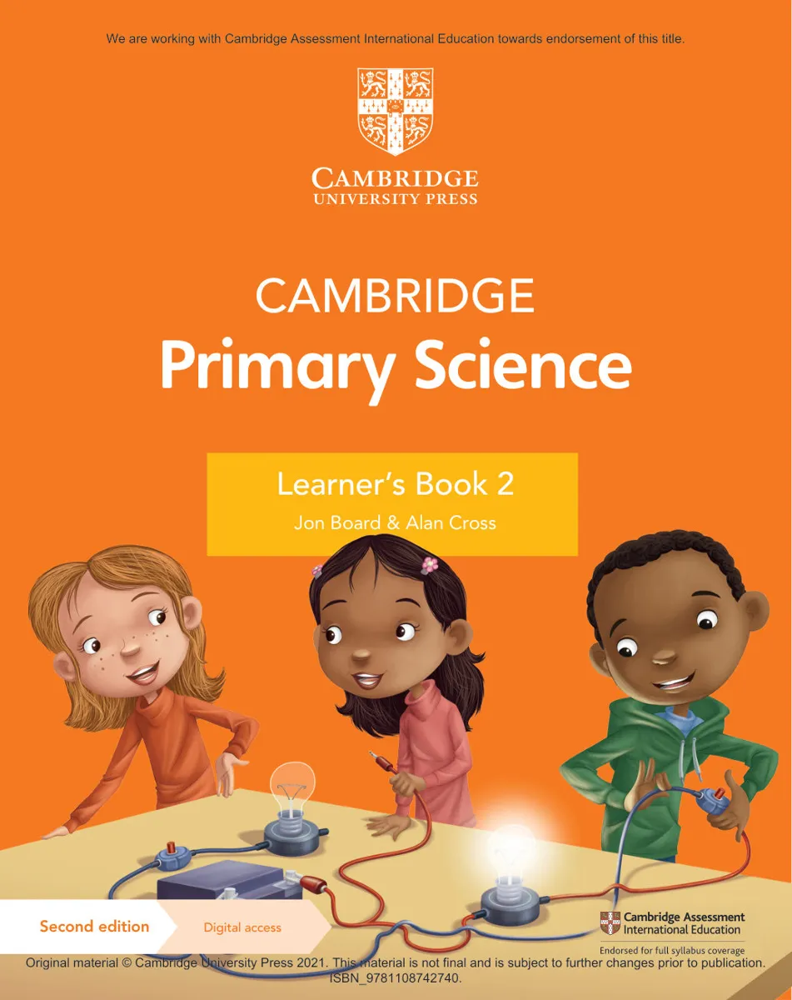
We are working with Cambridge Assessment International Education towards endorsement of this title.
CAMBRIDGE
Primary Science
Learner’s Book 2
Jon Board & Alan Cross
Second edition
Digital access
Original material © Cambridge University Press 2021. This material is not final and is subject to further changes prior to publication.
ISBN_9781108742740.
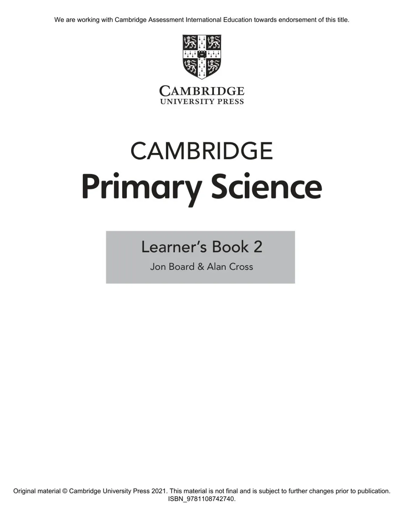
We are working with Cambridge Assessment International Education towards endorsement of this title.
CAMBRIDGE
Primary Science
Learner’s Book 2
Jon Board & Alan Cross
Original material © Cambridge University Press 2021. This material is not final and is subject to further changes prior to publication.
ISBN_9781108742740.
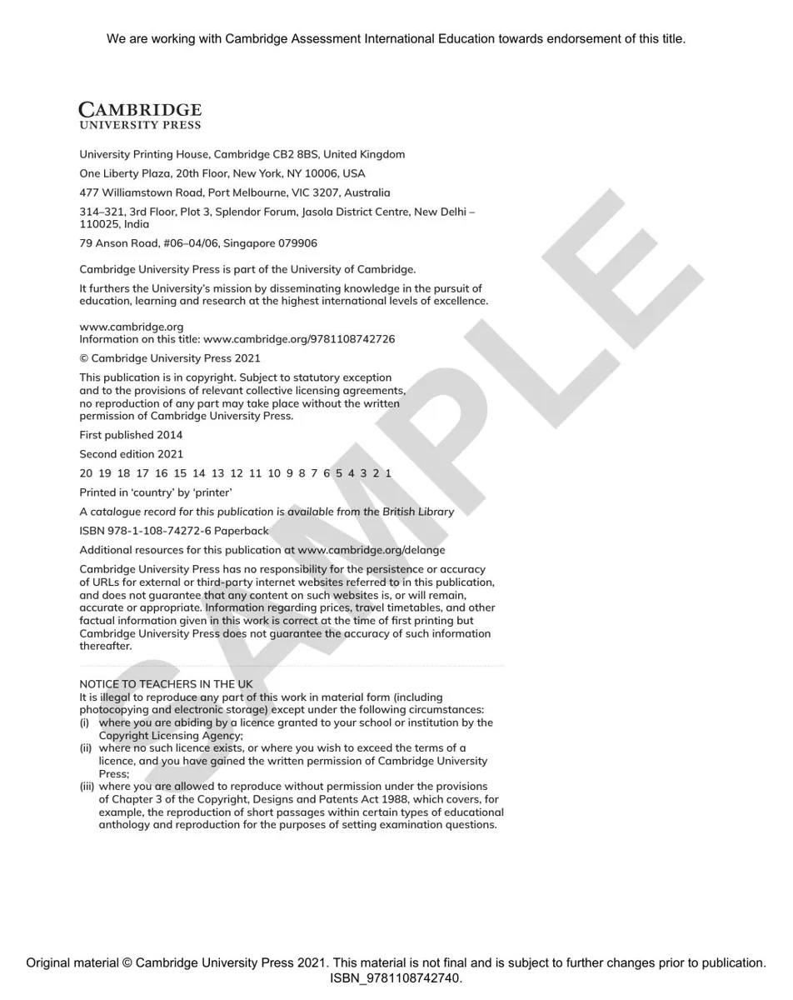
We are working with Cambridge Assessment International Education towards endorsement of this title.
University Printing House, Cambridge CB2 8BS, United Kingdom
One Liberty Plaza, 20th Floor, New York, NY 10006, USA
477 Williamstown Road, Port Melbourne, VIC 3207, Australia
314–321, 3rd Floor, Plot 3, Splendor Forum, Jasola District Centre, New Delhi –
110025, India
79 Anson Road, #06–04/06, Singapore 079906
Cambridge University Press is part of the University of Cambridge.
It furthers the University’s mission by disseminating knowledge in the pursuit of
education, learning and research at the highest international levels of excellence.
www.cambridge.org
Information on this title: www.cambridge.org/9781108742726
© Cambridge University Press 2021
This publication is in copyright. Subject to statutory exception
and to the provisions of relevant collective licensing agreements,
no reproduction of any part may take place without the written
permission of Cambridge University Press.
First published 2014
Second edition 2021
20 19 18 17 16 15 14 13 12 11 10 9 8 7 6 5 4 3 2 1
Printed in ‘country’ by ‘printer’
A catalogue record for this publication is available from the British Library
ISBN 978-1-108-74272-6 Paperback
Additional resources for this publication at www.cambridge.org/delange
Cambridge University Press has no responsibility for the persistence or accuracy
of URLs for external or third-party internet websites referred to in this publication,
and does not guarantee that any content on such websites is, or will remain,
accurate or appropriate. Information regarding prices, travel timetables, and other
factual information given in this work is correct at the time of first printing but
Cambridge University Press does not guarantee the accuracy of such information
thereafter.
NOTICE TO TEACHERS IN THE UK
It is illegal to reproduce any part of this work in material form (including
photocopying and electronic storage) except under the following circumstances:
(i) where you are abiding by a licence granted to your school or institution by the
Copyright Licensing Agency;
(ii) where no such licence exists, or where you wish to exceed the terms of a
licence, and you have gained the written permission of Cambridge University
Press;
(iii) where you are allowed to reproduce without permission under the provisions
of Chapter 3 of the Copyright, Designs and Patents Act 1988, which covers, for
example, the reproduction of short passages within certain types of educational
anthology and reproduction for the purposes of setting examination questions.
Original material © Cambridge University Press 2021. This material is not final and is subject to further changes prior to publication.
ISBN_9781108742740.
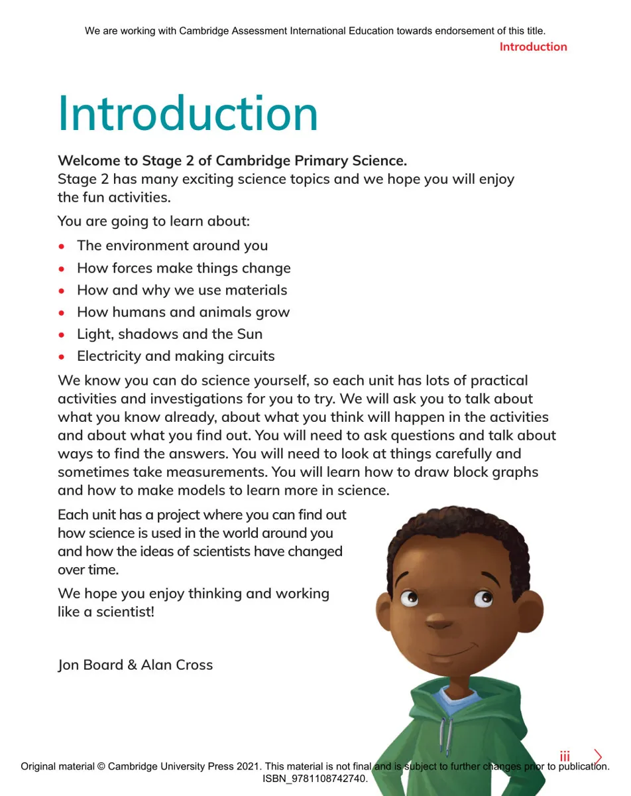
We are working with Cambridge Assessment International Education towards endorsement of this title.
Introduction
Introduction
Welcome to Stage 2 of Cambridge Primary Science.
Stage 2 has many exciting science topics and we hope you will enjoy
the fun activities.
You are going to learn about:
• The environment around you
• How forces make things change
• How and why we use materials
• How humans and animals grow
• Light, shadows and the Sun
• Electricity and making circuits
We know you can do science yourself, so each unit has lots of practical
activities and investigations for you to try. We will ask you to talk about
what you know already, about what you think will happen in the activities
and about what you find out. You will need to ask questions and talk about
ways to find the answers. You will need to look at things carefully and
sometimes take measurements. You will learn how to draw block graphs
and how to make models to learn more in science.
Each unit has a project where you can find out
how science is used in the world around you
and how the ideas of scientists have changed
over time.
We hope you enjoy thinking and working
like a scientist!
Jon Board & Alan Cross
iii
Original material © Cambridge University Press 2021. This material is not final and is subject to further changes prior to publication.
ISBN_9781108742740.
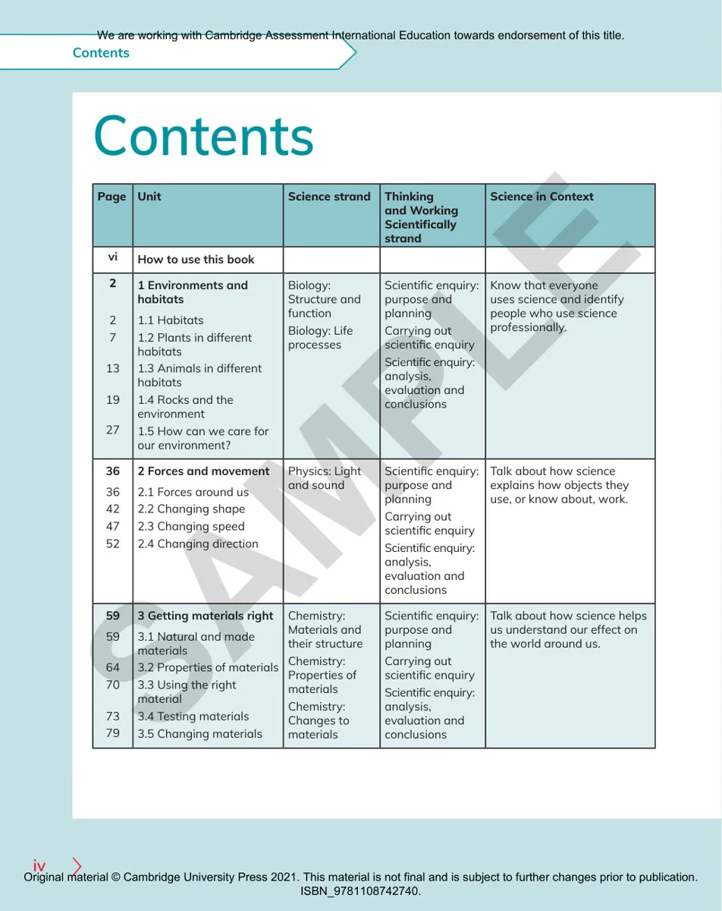
We are working with Cambridge Assessment International Education towards endorsement of this title.
Contents
Contents
Page
Unit
Science strand
Thinking
and Working
Scientifically
strand
vi
How to use this book
2
Biology:
Structure and
function
Biology: Life
processes
Scientific enquiry:
purpose and
planning
Carrying out
scientific enquiry
Scientific enquiry:
analysis,
evaluation and
conclusions
1 Environments and
habitats
2
7
1.1 Habitats
1.2 Plants in different
habitats
1.3 Animals in different
habitats
1.4 Rocks and the
environment
1.5 How can we care for
our environment?
13
19
27
2 Forces and movement
Scientific enquiry:
purpose and
planning
Carrying out
scientific enquiry
Scientific enquiry:
analysis,
evaluation and
conclusions
36
2.1 Forces around us
2.2 Changing shape
2.3 Changing speed
2.4 Changing direction
36
42
47
52
Scientific enquiry:
purpose and
planning
Carrying out
scientific enquiry
Scientific enquiry:
analysis,
evaluation and
conclusions
3 Getting materials right
59
3.1 Natural and made
materials
3.2 Properties of materials
3.3 Using the right
material
3.4 Testing materials
3.5 Changing materials
59
64
70
73
79
Science in Context
Know that everyone
uses science and identify
people who use science
professionally.
Talk about how science
explains how objects they
use, or know about, work.
Physics: Light
and sound
Talk about how science helps
us understand our effect on
the world around us.
Chemistry:
Materials and
their structure
Chemistry:
Properties of
materials
Chemistry:
Changes to
materials
iv
Original material © Cambridge University Press 2021. This material is not final and is subject to further changes prior to publication.
ISBN_9781108742740.
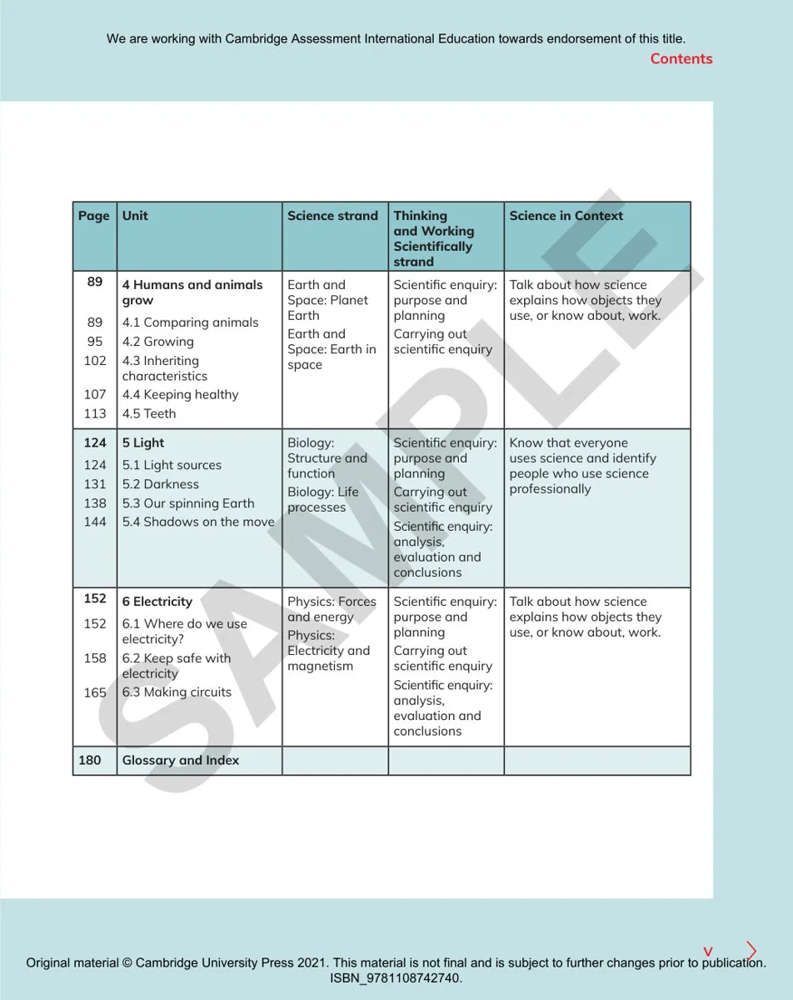
We are working with Cambridge Assessment International Education towards endorsement of this title.
Contents
Page
Unit
Science strand
Thinking
and Working
Scientifically
strand
89
Earth and
Space: Planet
Earth
Earth and
Space: Earth in
space
Scientific enquiry:
purpose and
planning
Carrying out
scientific enquiry
4 Humans and animals
grow
4.1 Comparing animals
4.2 Growing
4.3 Inheriting
characteristics
4.4 Keeping healthy
4.5 Teeth
89
95
102
107
113
5 Light
Biology:
Structure and
function
Biology: Life
processes
Scientific enquiry:
purpose and
planning
Carrying out
scientific enquiry
Scientific enquiry:
analysis,
evaluation and
conclusions
124
5.1 Light sources
5.2 Darkness
5.3 Our spinning Earth
5.4 Shadows on the move
124
131
138
144
152
6 Electricity
Physics: Forces
and energy
Physics:
Electricity and
magnetism
Scientific enquiry:
purpose and
planning
Carrying out
scientific enquiry
Scientific enquiry:
analysis,
evaluation and
conclusions
6.1 Where do we use
electricity?
6.2 Keep safe with
electricity
6.3 Making circuits
152
158
165
180
Glossary and Index
Science in Context
Talk about how science
explains how objects they
use, or know about, work.
Know that everyone
uses science and identify
people who use science
professionally
Talk about how science
explains how objects they
use, or know about, work.
v
Original material © Cambridge University Press 2021. This material is not final and is subject to further changes prior to publication.
ISBN_9781108742740.
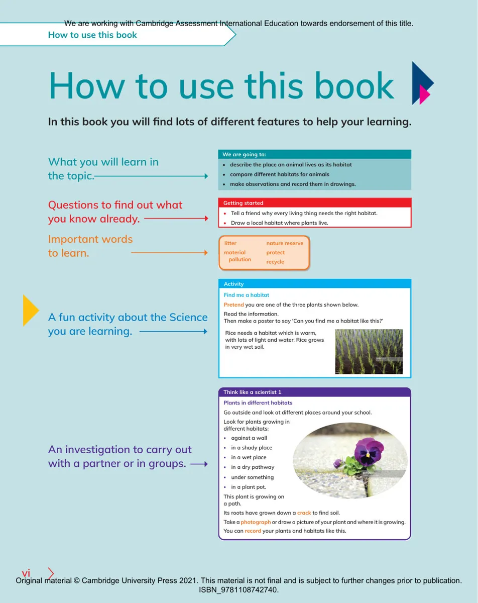
We are working with Cambridge Assessment International Education towards endorsement of this title.
How to use this book
How to use this book
In this book you will find lots of different features to help your learning.
We are going to:
• describe the place an animal lives as its habitat
• compare different habitats for animals
• make observations and record them in drawings.
Getting started
• Tell a friend why every living thing needs the right habitat.
• Draw a local habitat where plants live.
litter
nature reserve
material
protect
pollution
recycle
Activity
Find me a habitat
Pretend you are one of the three plants shown below.
Read the information.
Then make a poster to say ‘Can you find me a habitat like this?’
Rice needs a habitat which is warm,
with lots of light and water. Rice grows
in very wet soil.
What you will learn in
the topic.
Questions to find out what
you know already.
Important words
to learn.
A fun activity about the Science
you are learning.
Think like a scientist 1
Plants in different habitats
Go outside and look at different places around your school.
Look for plants growing in
different habitats:
• against a wall
• in a shady place
• in a wet place
• in a dry pathway
• under something
• in a plant pot.
This plant is growing on
a path.
Its roots have grown down a crack to find soil.
Take a photograph or draw a picture of your plant and where it is growing.
You can record your plants and habitats like this.
An investigation to carry out
with a partner or in groups.
vi
Original material © Cambridge University Press 2021. This material is not final and is subject to further changes prior to publication.
ISBN_9781108742740.
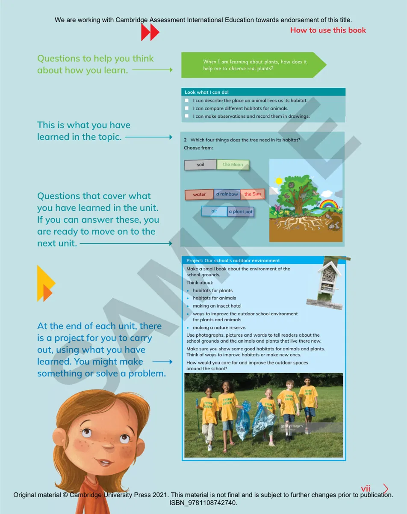
We are working with Cambridge Assessment International Education towards endorsement of this title.
How to use this book
Questions to help you think
about how you learn.
When I am learning about plants, how does it
help me to observe real plants?
Look what I can do!
I can describe the place an animal lives as its habitat.
I can compare different habitats for animals.
I can make observations and record them in drawings.
This is what you have
learned in the topic.
2 Which four things does the tree need in its habitat?
Choose from:
soil
the Moon
Questions that cover what
you have learned in the unit.
If you can answer these, you
are ready to move on to the
next unit.
the Sun
a rainbow
water
air
a plant pot
Project: Our school’s outdoor environment
Make a small book about the environment of the
school grounds.
Think about:
• habitats for plants
• habitats for animals
• making an insect hotel
• ways to improve the outdoor school environment
for plants and animals
• making a nature reserve.
Use photographs, pictures and words to tell readers about the
school grounds and the animals and plants that live there now.
Make sure you show some good habitats for animals and plants.
Think of ways to improve habitats or make new ones.
How would you care for and improve the outdoor spaces
around the school?
At the end of each unit, there
is a project for you to carry
out, using what you have
learned. You might make
something or solve a problem.
vii
Original material © Cambridge University Press 2021. This material is not final and is subject to further changes prior to publication.
ISBN_9781108742740.
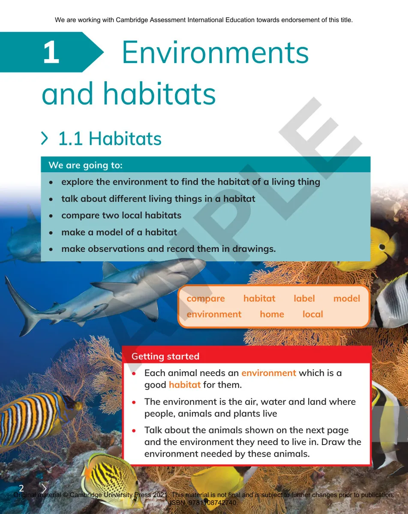
We are working with Cambridge Assessment International Education towards endorsement of this title.
1
Environments
and habitats
1.1 Habitats
We are going to:
• explore the environment to find the habitat of a living thing
• talk about different living things in a habitat
• compare two local habitats
• make a model of a habitat
• make observations and record them in drawings.
compare habitat label model
environment home local
Getting started
• Each animal needs an environment which is a
good habitat for them.
• The environment is the air, water and land where
people, animals and plants live
• Talk about the animals shown on the next page
and the environment they need to live in. Draw the
environment needed by these animals.
2
Original material © Cambridge University Press 2021. This material is not final and is subject to further changes prior to publication.
ISBN_9781108742740.
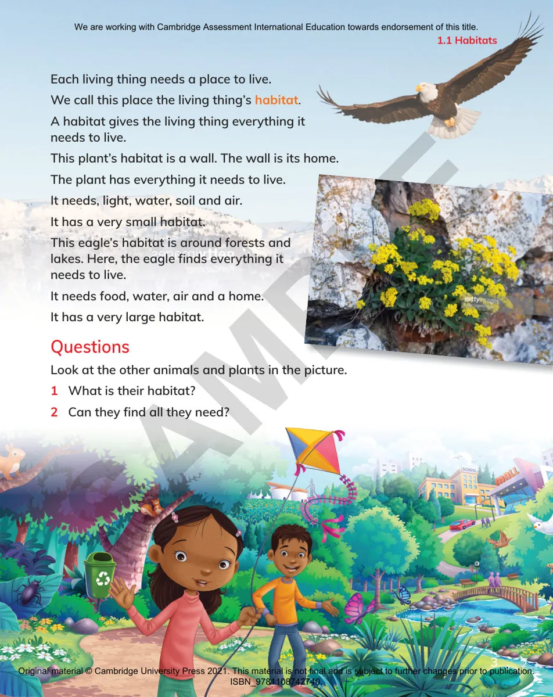
We are working with Cambridge Assessment International Education towards endorsement of this title.
1.1 Habitats
Each living thing needs a place to live.
We call this place the living thing’s habitat.
A habitat gives the living thing everything it
needs to live.
This plant’s habitat is a wall. The wall is its home.
The plant has everything it needs to live.
It needs, light, water, soil and air.
It has a very small habitat.
This eagle’s habitat is around forests and
lakes. Here, the eagle finds everything it
needs to live.
It needs food, water, air and a home.
It has a very large habitat.
Questions
Look at the other animals and plants in the picture.
picture.
1 What is their habitat?
2 Can they find all they need?
3
Original material © Cambridge University Press 2021. This material is not final and is subject to further changes prior to publication.
ISBN_9781108742740.
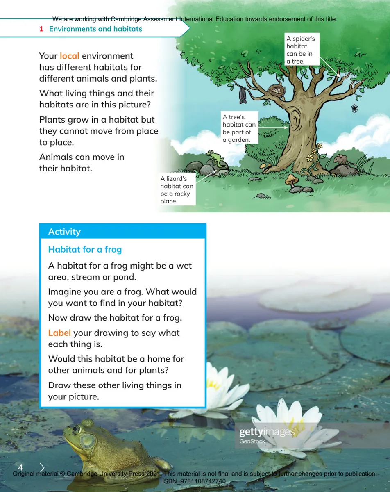
We are working with Cambridge Assessment International Education towards endorsement of this title.
1Environments and habitats
A spider's
habitat
can be in
a tree.
Your local environment
has different habitats for
different animals and plants.
What living things and their
habitats are in this picture?
Plants grow in a habitat but
they cannot move from place
to place.
Animals can move in
their habitat.
A lizard's
habitat can
be a rocky
place.
Activity
Habitat for a frog
A habitat for a frog might be a wet
area, stream or pond.
Imagine you are a frog. What would
you want to find in your habitat?
Now draw the habitat for a frog.
Label your drawing to say what
each thing is.
Would this habitat be a home for
other animals and for plants?
Draw these other living things in
your picture.
A tree's
habitat can
be part of
a garden.
4
Original material © Cambridge University Press 2021. This material is not final and is subject to further changes prior to publication.
ISBN_9781108742740.
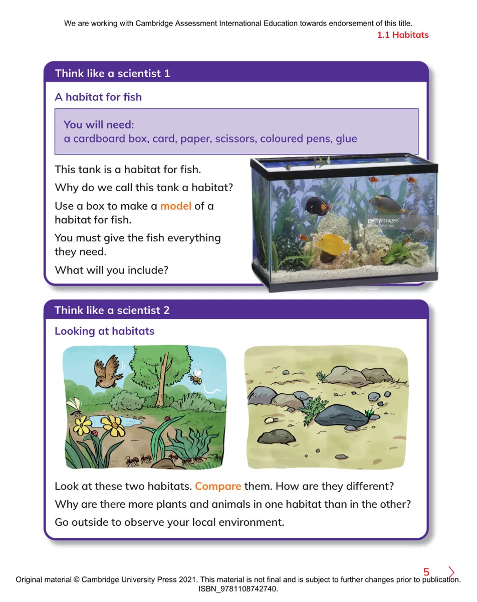
We are working with Cambridge Assessment International Education towards endorsement of this title.
1.1 Habitats
Think like a scientist 1
A habitat for fi sh
You will need:
a cardboard box, card, paper, scissors, coloured pens, glue
This tank is a habitat for fish.
Why do we call this tank a habitat?
Use a box to make a model of a
habitat for fish.
You must give the fish everything
they need.
What will you include?
Think like a scientist 2
Looking at habitats
Look at these two habitats. Compare them. How are they different?
Why are there more plants and animals in one habitat than in the other?
Go outside to observe your local environment.
5
Original material © Cambridge University Press 2021. This material is not final and is subject to further changes prior to publication.
ISBN_9781108742740.
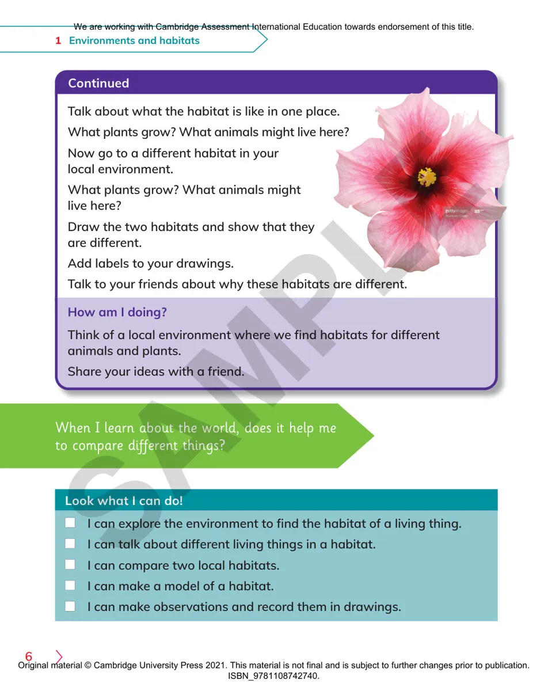
We are working with Cambridge Assessment International Education towards endorsement of this title.
1Environments and habitats
Continued
Talk about what the habitat is like in one place.
What plants grow? What animals might live here?
Now go to a different habitat in your
local environment.
What plants grow? What animals might
live here?
Draw the two habitats and show that they
are different.
Add labels to your drawings.
Talk to your friends about why these habitats are different.
How am I doing?
Think of a local environment where we find habitats for different
animals and plants.
Share your ideas with a friend.
When I learn about the world, does it help me
to compare different things?
Look what I can do!
I can explore the environment to find the habitat of a living thing.
I can talk about different living things in a habitat.
I can compare two local habitats.
I can make a model of a habitat.
I can make observations and record them in drawings.
6
Original material © Cambridge University Press 2021. This material is not final and is subject to further changes prior to publication.
ISBN_9781108742740.
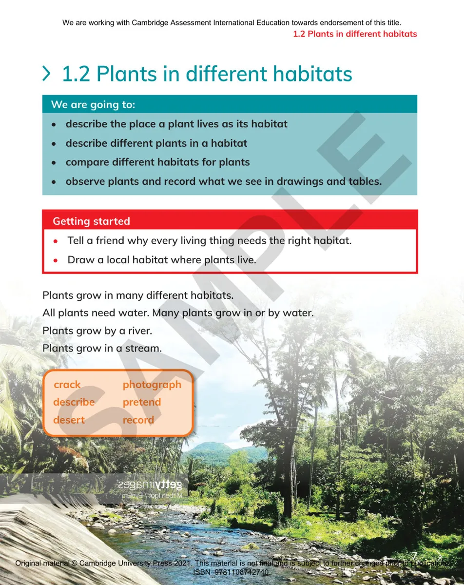
We are working with Cambridge Assessment International Education towards endorsement of this title.
1.2 Plants in different habitats
1.2 Plants in different habitats
We are going to:
• describe the place a plant lives as its habitat
• describe different plants in a habitat
• compare different habitats for plants
• observe plants and record what we see in drawings and tables.
Getting started
• Tell a friend why every living thing needs the right habitat.
• Draw a local habitat where plants live.
Plants grow in many different habitats.
All plants need water. Many plants grow in or by water.
Plants grow by a river.
Plants grow in a stream.
crack
photograph
describe
pretend
desert
record
7
Original material © Cambridge University Press 2021. This material is not final and is subject to further changes prior to publication.
ISBN_9781108742740.
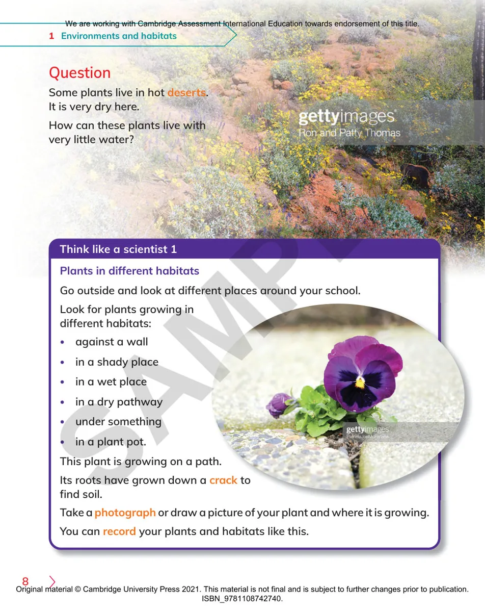
We are working with Cambridge Assessment International Education towards endorsement of this title.
1Environments and habitats
1
Environments and habitats
Question
Some plants live in hot deserts.
It is very dry here.
How can these plants live with
very little water?
Think like a scientist 1
Plants in different habitats
Go outside and look at different places around your school.
Look for plants growing in
different habitats:
• against a wall
• in a shady place
• in a wet place
• in a dry pathway
• under something
• in a plant pot.
This plant is growing on a path.
th.
Its roots have grown down a crack to
find soil.
crack
k
k
to
Take a photograph or draw a picture of your plant and where it is growing.
You can record your plants and habitats like this.
8
8
Original material © Cambridge University Press 2021. This material is not final and is subject to further changes prior to publication.
ISBN_9781108742740.
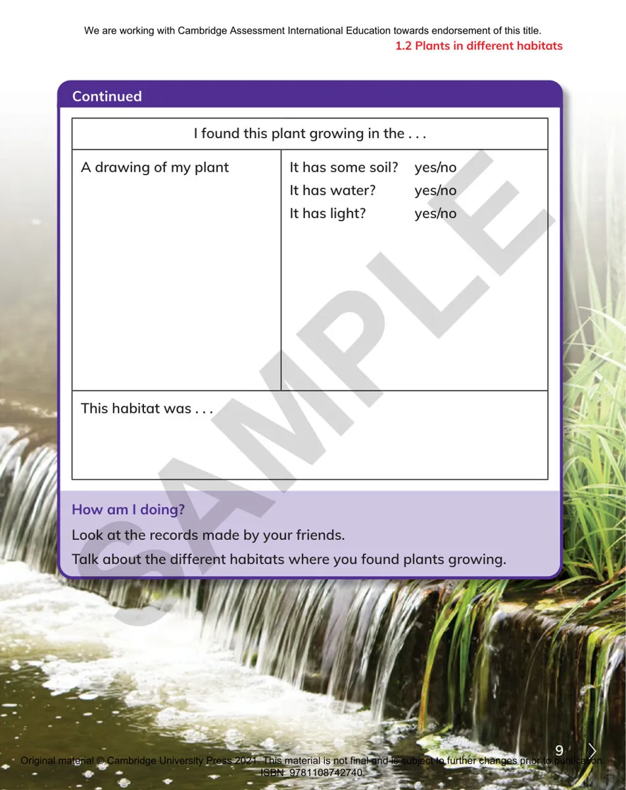
We are working with Cambridge Assessment International Education towards endorsement of this title.
1.2 Plants in different habitats
Continued
I found this plant growing in the . . .
A drawing of my plant
It has some soil?
yes/no
It has water?
yes/no
It has light?
yes/no
This habitat was . . .
How am I doing?
Look at the records made by your friends.
Talk about the different habitats where you found plants growing.
9
Original material © Cambridge University Press 2021. This material is not final and is subject to further changes prior to publication.
ISBN_9781108742740.
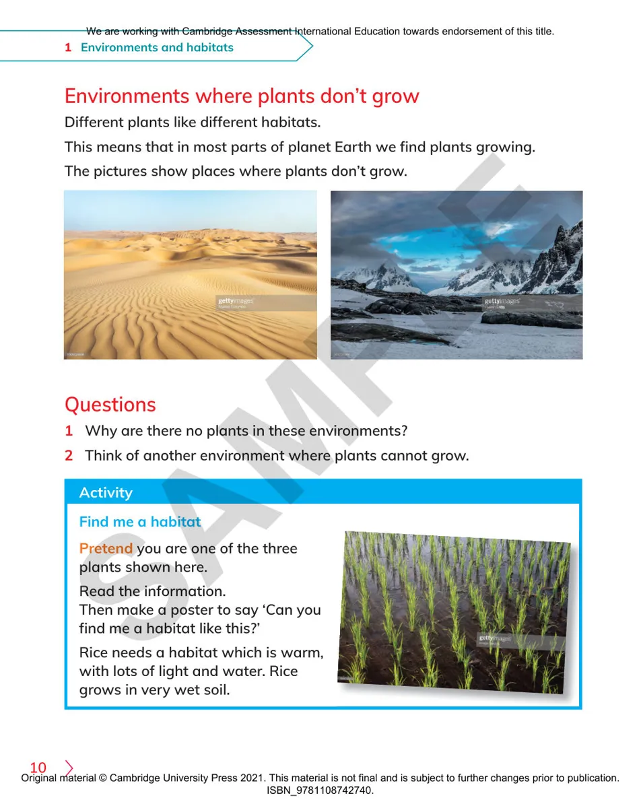
We are working with Cambridge Assessment International Education towards endorsement of this title.
1Environments and habitats
Environments where plants don’t grow
Different plants like different habitats.
This means that in most parts of planet Earth we find plants growing.
The pictures show places where plants don’t grow.
Questions
1 Why are there no plants in these environments?
2 Think of another environment where plants cannot grow.
Activity
Find me a habitat
Pretend you are one of the three
plants shown here.
Read the information.
Then make a poster to say ‘Can you
find me a habitat like this?’
Rice needs a habitat which is warm,
with lots of light and water. Rice
grows in very wet soil.
10
Original material © Cambridge University Press 2021. This material is not final and is subject to further changes prior to publication.
ISBN_9781108742740.
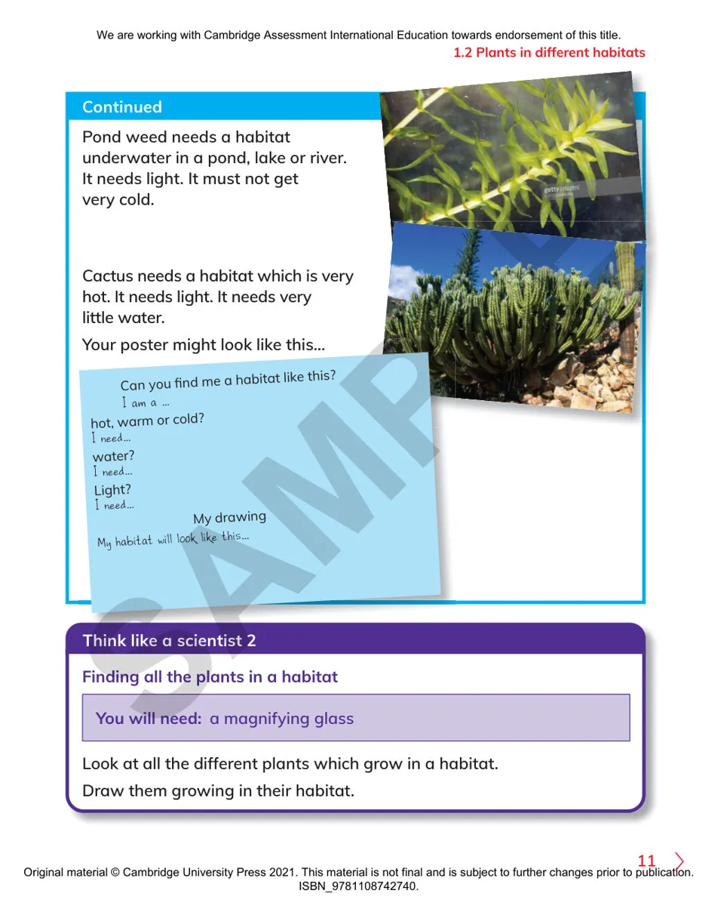
We are working with Cambridge Assessment International Education towards endorsement of this title.
1.2 Plants in different habitats
Continued
Pond weed needs a habitat
underwater in a pond, lake or river.
It needs light. It must not get
very cold.
Cactus needs a habitat which is very
hot. It needs light. It needs very
little water.
p
g
Your poster might look like this…
Can you find me a habitat like this?
I am a …
hot, warm or cold?
I need…
water?
I need…
Light?
I need…
My drawing
My habitat will look like this…
Think like a scientist 2
Finding all the plants in a habitat
You will need: a magnifying glass
Look at all the different plants which grow in a habitat.
Draw them growing in their habitat.
11
Original material © Cambridge University Press 2021. This material is not final and is subject to further changes prior to publication.
ISBN_9781108742740.
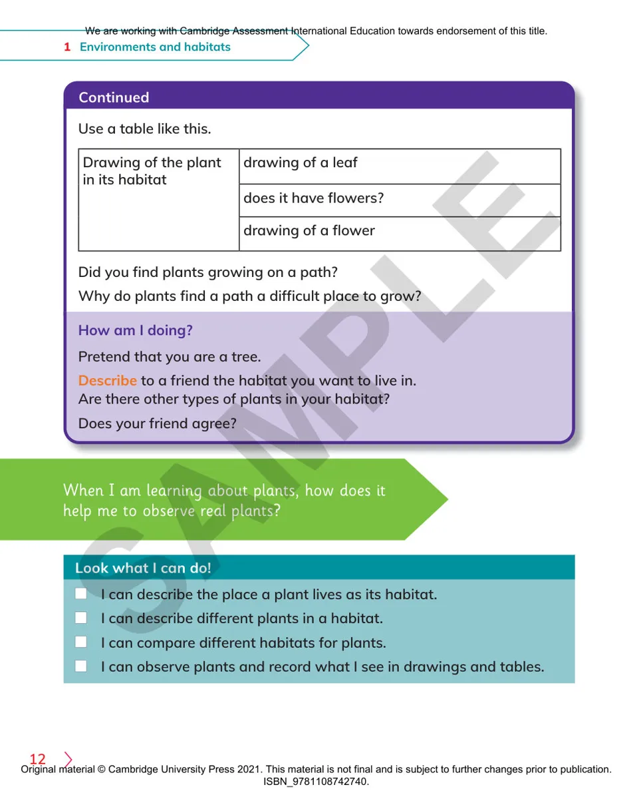
We are working with Cambridge Assessment International Education towards endorsement of this title.
1Environments and habitats
Continued
Use a table like this.
Drawing of the plant
in its habitat
drawing of a leaf
does it have flowers?
drawing of a flower
Did you find plants growing on a path?
Why do plants find a path a difficult place to grow?
How am I doing?
Pretend that you are a tree.
Describe to a friend the habitat you want to live in.
Are there other types of plants in your habitat?
Does your friend agree?
When I am learning about plants, how does it
help me to observe real plants?
Look what I can do!
I can describe the place a plant lives as its habitat.
I can describe different plants in a habitat.
I can compare different habitats for plants.
I can observe plants and record what I see in drawings and tables.
12
Original material © Cambridge University Press 2021. This material is not final and is subject to further changes prior to publication.
ISBN_9781108742740.
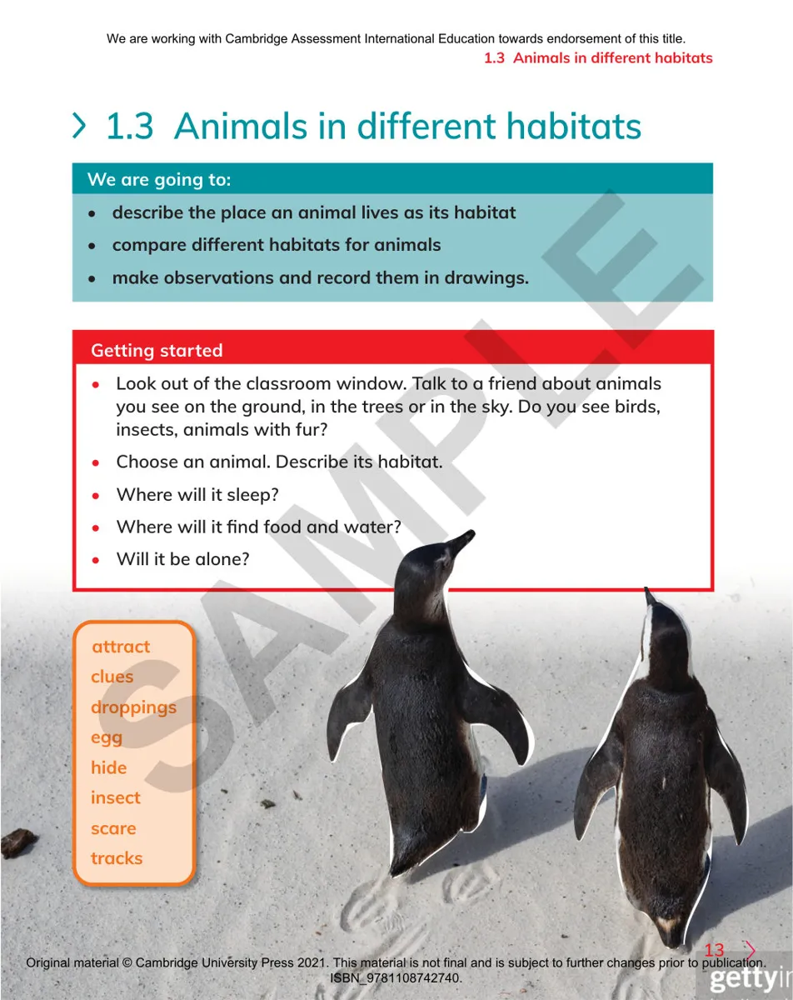
We are working with Cambridge Assessment International Education towards endorsement of this title.
1.3 Animals in different habitats
1.3 Animals in different habitats
We are going to:
• describe the place an animal lives as its habitat
• compare different habitats for animals
• make observations and record them in drawings.
Getting started
• Look out of the classroom window. Talk to a friend about animals
you see on the ground, in the trees or in the sky. Do you see birds,
insects, animals with fur?
• Choose an animal. Describe its habitat.
• Where will it sleep?
• Where will it fi nd food and water?
• Will it be alone?
attract
clues
droppings
egg
hide
insect
scare
tracks
13
13
13
Original material © Cambridge University Press 2021. This material is not final and is subject to further changes prior to publication.
ISBN_9781108742740.
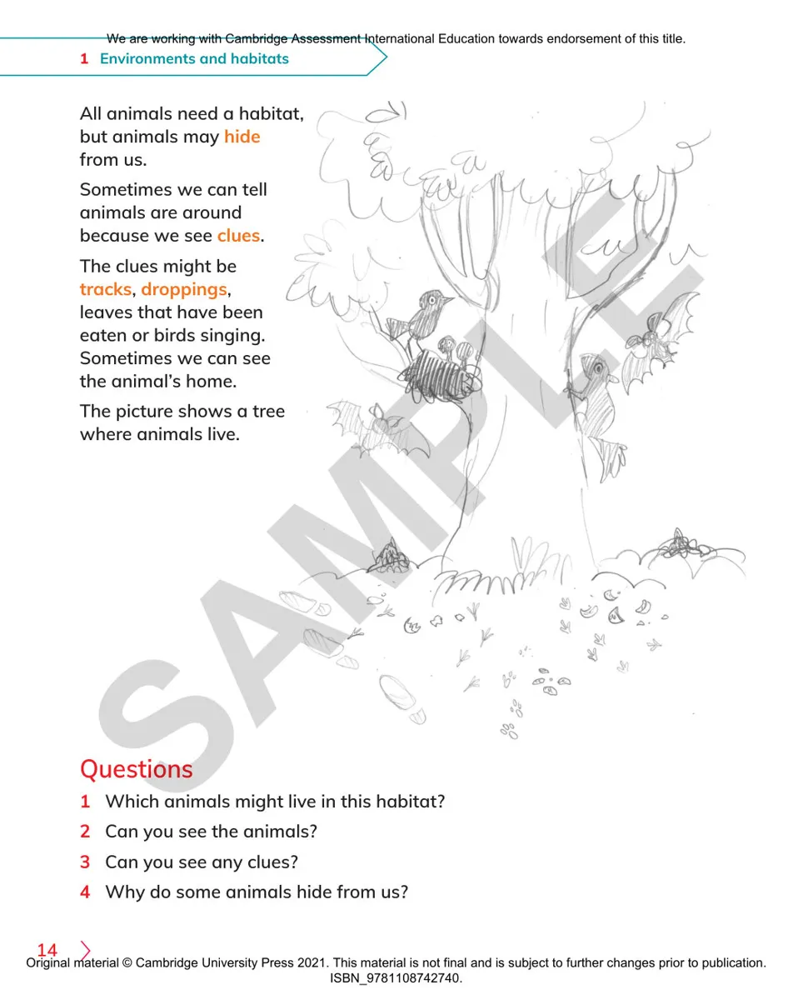
We are working with Cambridge Assessment International Education towards endorsement of this title.
1Environments and habitats
All animals need a habitat,
but animals may hide
from us.
Sometimes we can tell
animals are around
because we see clues.
The clues might be
tracks, droppings,
leaves that have been
eaten or birds singing.
Sometimes we can see
the animal’s home.
The picture shows a tree
where animals live.
Questions
1 Which animals might live in this habitat?
2 Can you see the animals?
3 Can you see any clues?
4 Why do some animals hide from us?
14
Original material © Cambridge University Press 2021. This material is not final and is subject to further changes prior to publication.
ISBN_9781108742740.
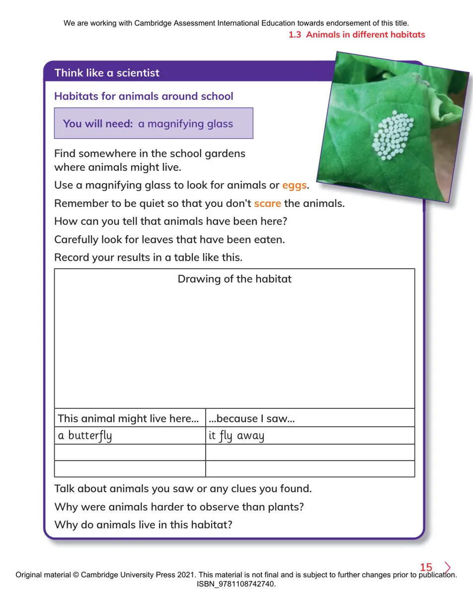
We are working with Cambridge Assessment International Education towards endorsement of this title.
1.3 Animals in different habitats
Think like a scientist
Habitats for animals around school
You will need: a magnifying glass
Find somewhere in the school gardens
where animals might live.
Use a magnifying glass to look for animals or eggs.
Remember to be quiet so that you don’t scare the animals.
imals.
How can you tell that animals have been here?
Carefully look for leaves that have been eaten.
Record your results in a table like this.
Drawing of the habitat
This animal might live here…
…because I saw…
a butterfly
it fly away
Talk about animals you saw or any clues you found.
Why were animals harder to observe than plants?
Why do animals live in this habitat?
15
Original material © Cambridge University Press 2021. This material is not final and is subject to further changes prior to publication.
ISBN_9781108742740.
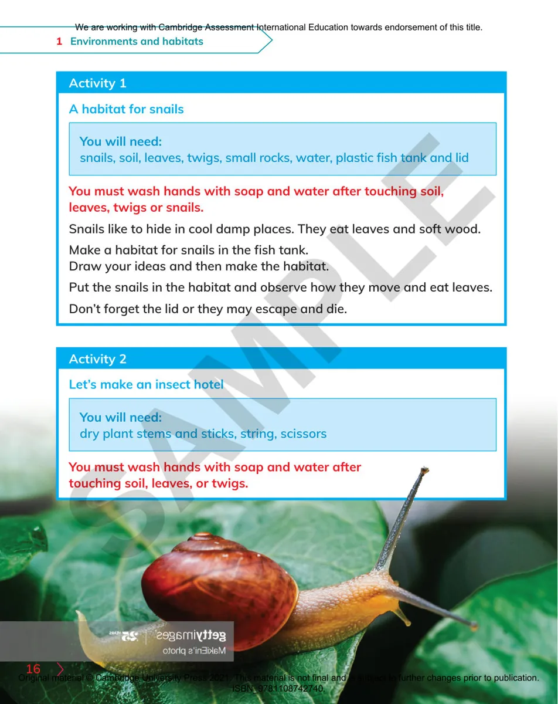
We are working with Cambridge Assessment International Education towards endorsement of this title.
1Environments and habitats
Activity 1
A habitat for snails
You will need:
snails, soil, leaves, twigs, small rocks, water, plastic fish tank and lid
You must wash hands with soap and water after touching soil,
leaves, twigs or snails.
Snails like to hide in cool damp places. They eat leaves and soft wood.
Make a habitat for snails in the fish tank.
Draw your ideas and then make the habitat.
Put the snails in the habitat and observe how they move and eat leaves.
Don’t forget the lid or they may escape and die.
Activity 2
Let’s make an insect hotel
You will need:
dry plant stems and sticks, string, scissors
You must wash hands with soap and water after
touching soil, leaves, or twigs.
16
Original material © Cambridge University Press 2021. This material is not final and is subject to further changes prior to publication.
ISBN_9781108742740.
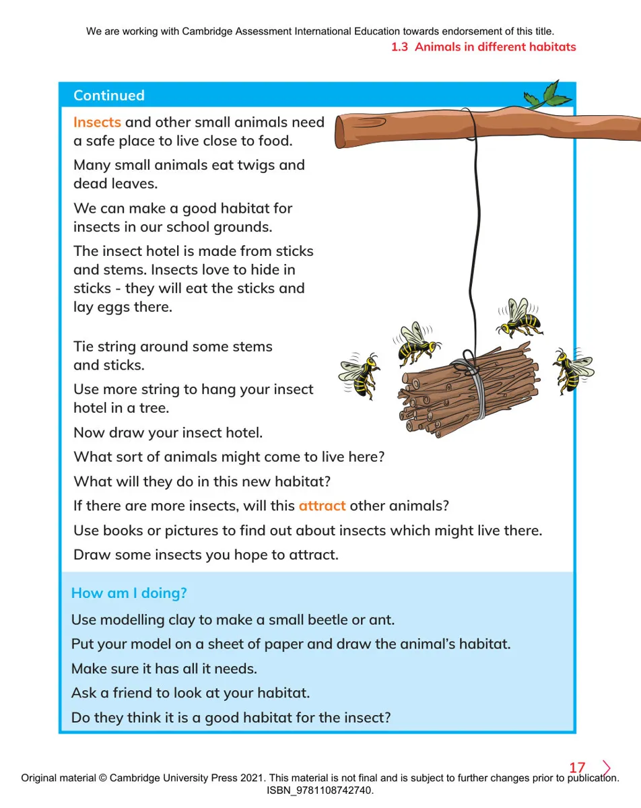
We are working with Cambridge Assessment International Education towards endorsement of this title.
1.3 Animals in different habitats
Continued
Insects and other small animals need
a safe place to live close to food.
Many small animals eat twigs and
dead leaves.
We can make a good habitat for
insects in our school grounds.
The insect hotel is made from sticks
and stems. Insects love to hide in
sticks - they will eat the sticks and
lay eggs there.
Tie string around some stems
and sticks.
Use more string to hang your insect
hotel in a tree.
Now draw your insect hotel.
What sort of animals might come to live here?
What will they do in this new habitat?
If there are more insects, will this attract other animals?
Use books or pictures to find out about insects which might live there.
Draw some insects you hope to attract.
How am I doing?
Use modelling clay to make a small beetle or ant.
Put your model on a sheet of paper and draw the animal’s habitat.
Make sure it has all it needs.
Ask a friend to look at your habitat.
Do they think it is a good habitat for the insect?
17
Original material © Cambridge University Press 2021. This material is not final and is subject to further changes prior to publication.
ISBN_9781108742740.
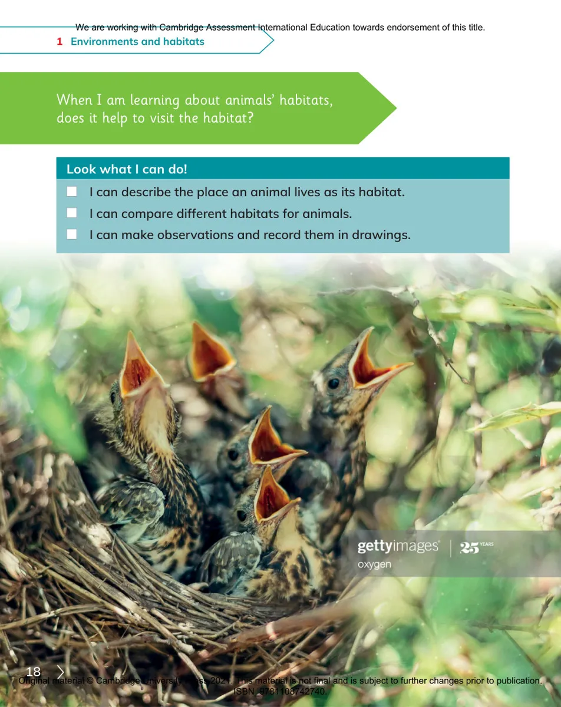
We are working with Cambridge Assessment International Education towards endorsement of this title.
1Environments and habitats
When I am learning about animals’ habitats,
does it help to visit the habitat?
Look what I can do!
I can describe the place an animal lives as its habitat.
I can compare different habitats for animals.
I can make observations and record them in drawings.
18
18
18
Original material © Cambridge University Press 2021. This material is not final and is subject to further changes prior to publication.
ISBN_9781108742740.
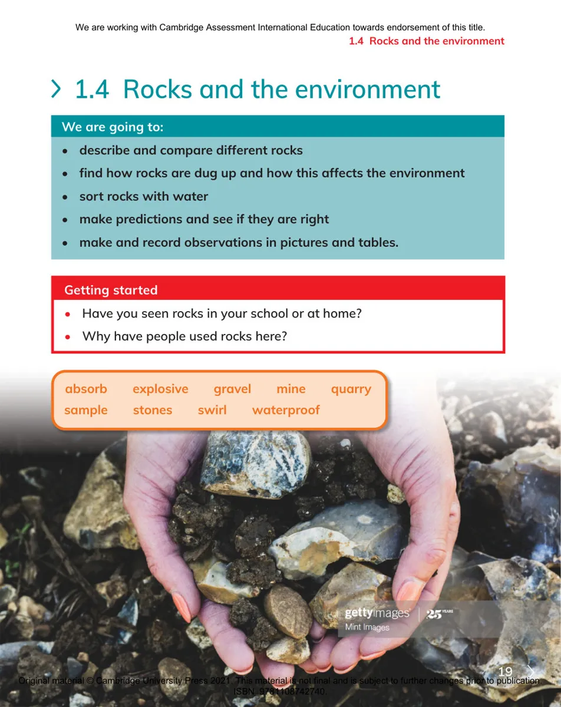
We are working with Cambridge Assessment International Education towards endorsement of this title.
1.4 Rocks and the environment
1.4 Rocks and the environment
We are going to:
• describe and compare different rocks
• find how rocks are dug up and how this affects the environment
• sort rocks with water
• make predictions and see if they are right
• make and record observations in pictures and tables.
Getting started
• Have you seen rocks in your school or at home?
• Why have people used rocks here?
absorb explosive gravel mine quarry
sample stones swirl waterproof
19
Original material © Cambridge University Press 2021. This material is not final and is subject to further changes prior to publication.
ISBN_9781108742740.
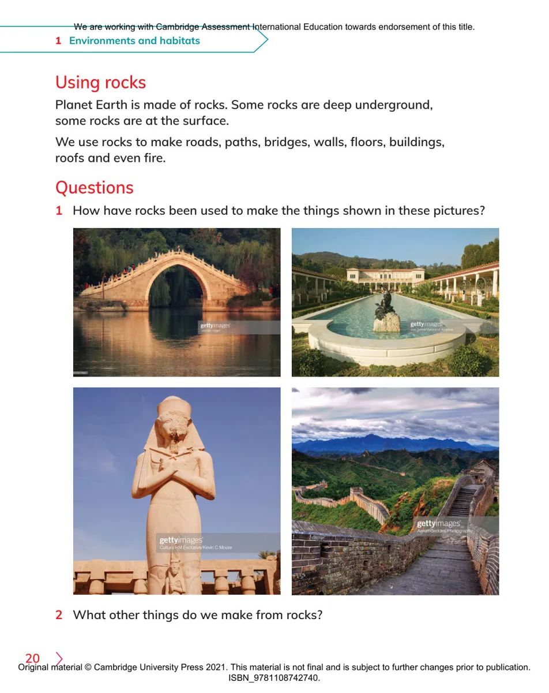
We are working with Cambridge Assessment International Education towards endorsement of this title.
1Environments and habitats
Using rocks
Planet Earth is made of rocks. Some rocks are deep underground,
some rocks are at the surface.
We use rocks to make roads, paths, bridges, walls, floors, buildings,
roofs and even fire.
Questions
1 How have rocks been used to make the things shown in these pictures?
2 What other things do we make from rocks?
20
Original material © Cambridge University Press 2021. This material is not final and is subject to further changes prior to publication.
ISBN_9781108742740.
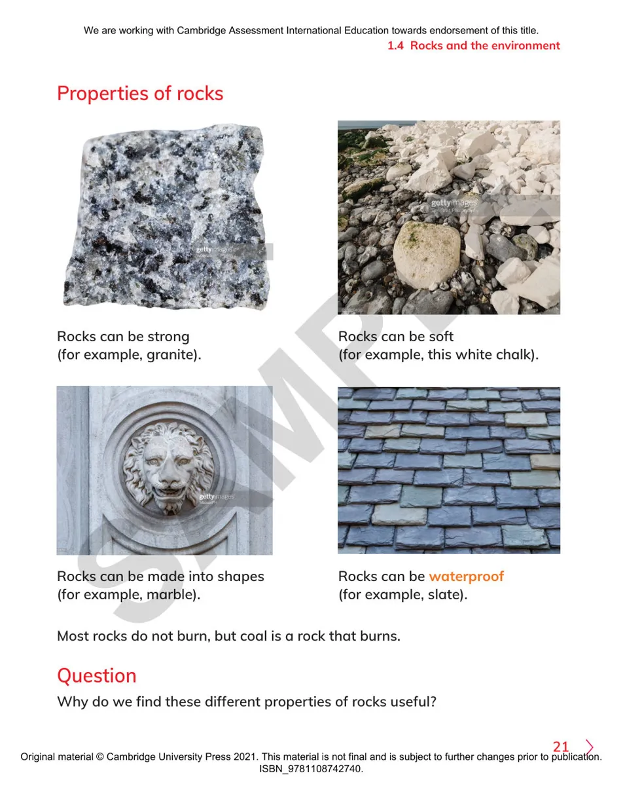
We are working with Cambridge Assessment International Education towards endorsement of this title.
1.4 Rocks and the environment
Properties of rocks
Rocks can be strong
(for example, granite).
Rocks can be soft
(for example, this white chalk).
Rocks can be waterproof
(for example, slate).
Rocks can be made into shapes
(for example, marble).
Most rocks do not burn, but coal is a rock that burns.
Question
Why do we find these different properties of rocks useful?
21
Original material © Cambridge University Press 2021. This material is not final and is subject to further changes prior to publication.
ISBN_9781108742740.
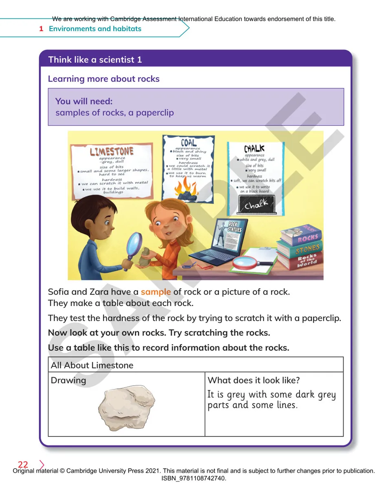
We are working with Cambridge Assessment International Education towards endorsement of this title.
1Environments and habitats
Think like a scientist 1
Learning more about rocks
You will need:
samples of rocks, a paperclip
Sofia and Zara have a sample of rock or a picture of a rock.
They make a table about each rock.
They test the hardness of the rock by trying to scratch it with a paperclip.
Now look at your own rocks. Try scratching the rocks.
Use a table like this to record information about the rocks.
All About Limestone
Drawing
What does it look like?
It is grey with some dark grey
parts and some lines.
22
Original material © Cambridge University Press 2021. This material is not final and is subject to further changes prior to publication.
ISBN_9781108742740.
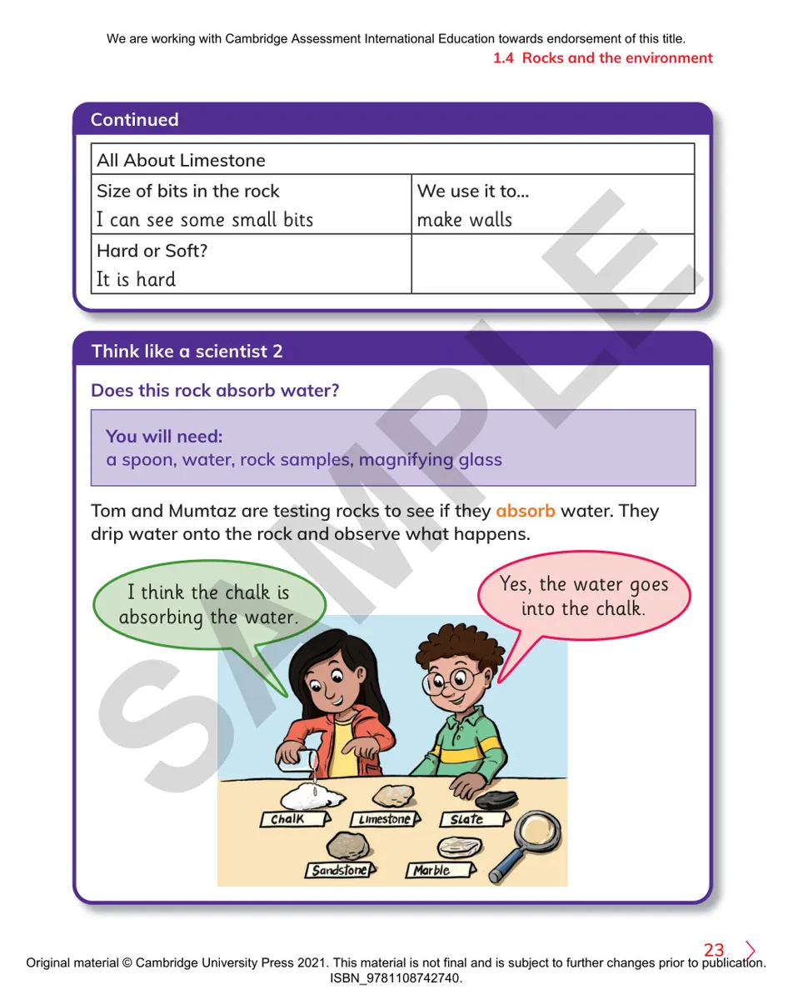
We are working with Cambridge Assessment International Education towards endorsement of this title.
1.4 Rocks and the environment
Continued
All About Limestone
Size of bits in the rock
I can see some small bits
Hard or Soft?
It is hard
Think like a scientist 2
Does this rock absorb water?
You will need:
a spoon, water, rock samples, magnifying glass
Tom and Mumtaz are testing rocks to see if they absorb water. They
drip water onto the rock and observe what happens.
Yes, the water goes
I think the chalk is
absorbing the water.
into the chalk.
We use it to…
make walls
23
Original material © Cambridge University Press 2021. This material is not final and is subject to further changes prior to publication.
ISBN_9781108742740.
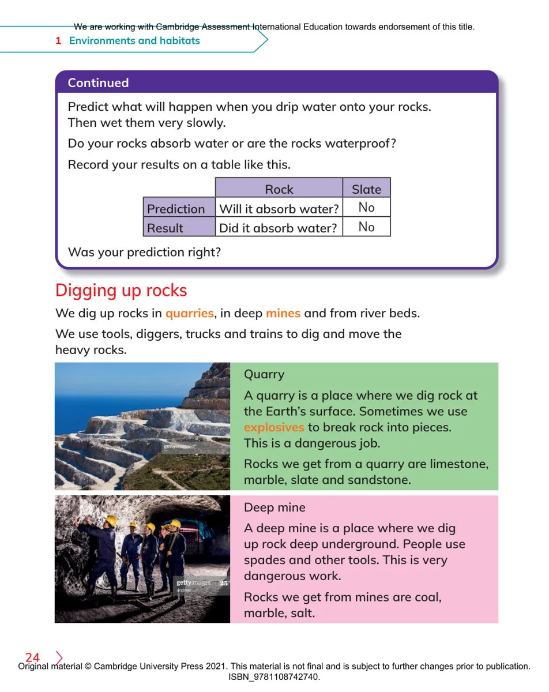
We are working with Cambridge Assessment International Education towards endorsement of this title.
1Environments and habitats
Continued
Predict what will happen when you drip water onto your rocks.
Then wet them very slowly.
Do your rocks absorb water or are the rocks waterproof?
Record your results on a table like this.
Rock
Slate
No
Prediction
Will it absorb water?
No
Result
Did it absorb water?
Was your prediction right?
Digging up rocks
We dig up rocks in quarries, in deep mines and from river beds.
We use tools, diggers, trucks and trains to dig and move the
heavy rocks.
Quarry
A quarry is a place where we dig rock at
the Earth’s surface. Sometimes we use
explosives to break rock into pieces.
This is a dangerous job.
Rocks we get from a quarry are limestone,
marble, slate and sandstone.
Deep mine
A deep mine is a place where we dig
up rock deep underground. People use
spades and other tools. This is very
dangerous work.
Rocks we get from mines are coal,
marble, salt.
24
Original material © Cambridge University Press 2021. This material is not final and is subject to further changes prior to publication.
ISBN_9781108742740.
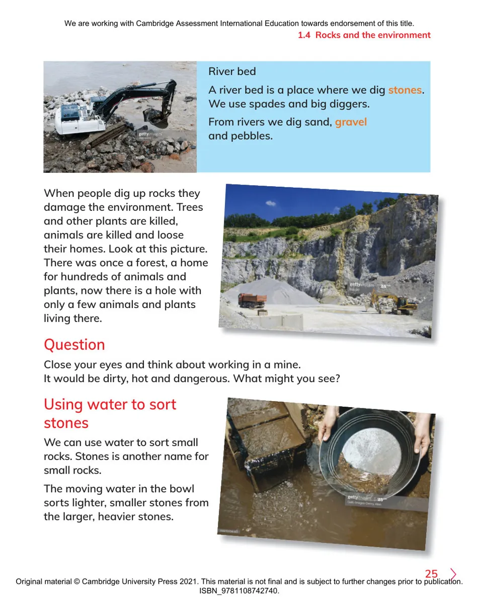
We are working with Cambridge Assessment International Education towards endorsement of this title.
1.4 Rocks and the environment
River bed
A river bed is a place where we dig stones.
We use spades and big diggers.
From rivers we dig sand, gravel
and pebbles.
When people dig up rocks they
damage the environment. Trees
and other plants are killed,
animals are killed and loose
their homes. Look at this picture.
There was once a forest, a home
for hundreds of animals and
plants, now there is a hole with
only a few animals and plants
living there.
Question
Close your eyes and think about working in a mine.
It would be dirty, hot and dangerous. What might you see?
Using water to sort
stones
We can use water to sort small
rocks. Stones is another name for
small rocks.
The moving water in the bowl
sorts lighter, smaller stones from
the larger, heavier stones.
25
Original material © Cambridge University Press 2021. This material is not final and is subject to further changes prior to publication.
ISBN_9781108742740.
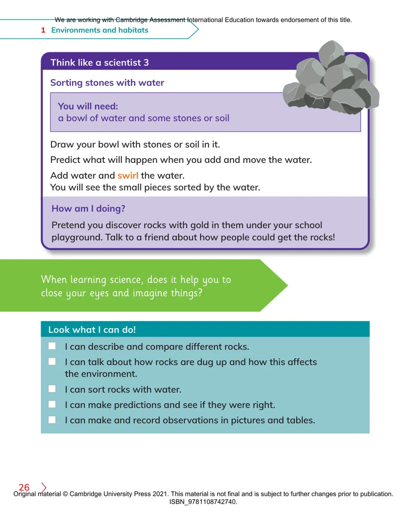
We are working with Cambridge Assessment International Education towards endorsement of this title.
1Environments and habitats
Think like a scientist 3
Sorting stones with water
You will need:
a bowl of water and some stones or soil
Draw your bowl with stones or soil in it.
Predict what will happen when you add and move the water.
Add water and swirl the water.
You will see the small pieces sorted by the water.
How am I doing?
Pretend you discover rocks with gold in them under your school
playground. Talk to a friend about how people could get the rocks!
When learning science, does it help you to
close your eyes and imagine things?
Look what I can do!
I can describe and compare different rocks.
I can talk about how rocks are dug up and how this affects
the environment.
I can sort rocks with water.
I can make predictions and see if they were right.
I can make and record observations in pictures and tables.
26
Original material © Cambridge University Press 2021. This material is not final and is subject to further changes prior to publication.
ISBN_9781108742740.
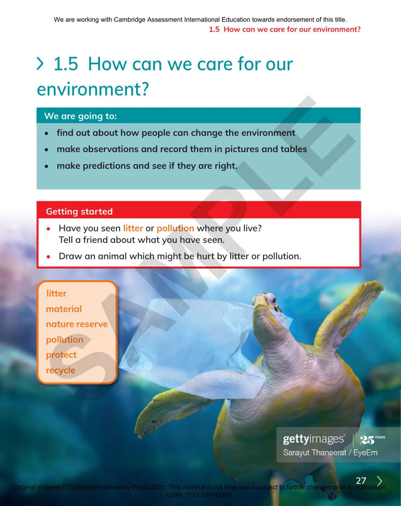
We are working with Cambridge Assessment International Education towards endorsement of this title.
1.5 How can we care for our environment?
1.5 How can we care for our
environment?
We are going to:
• find out about how people can change the environment
• make observations and record them in pictures and tables
• make predictions and see if they are right.
Getting started
• Have you seen litter or pollution where you live?
Tell a friend about what you have seen.
• Draw an animal which might be hurt by litter or pollution.
litter
material
nature reserve
pollution
protect
recycle
27
27
27
Original material © Cambridge University Press 2021. This material is not final and is subject to further changes prior to publication.
ISBN_9781108742740.
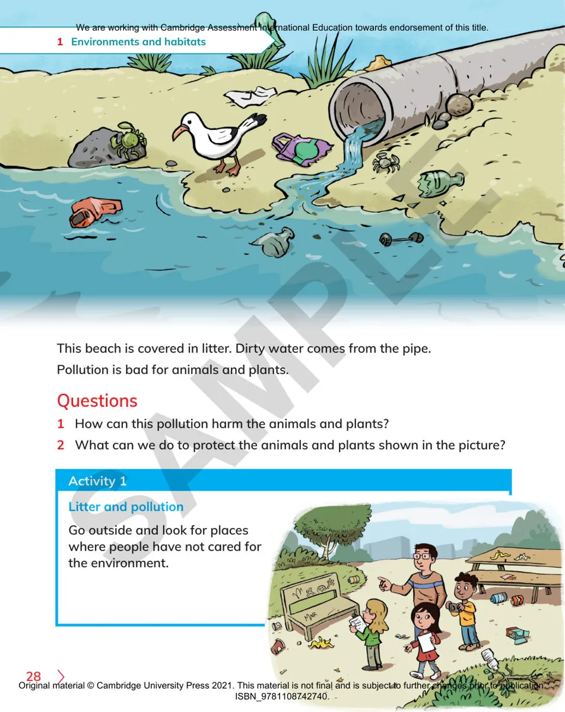
We are working with Cambridge Assessment International Education towards endorsement of this title.
1Environments and habitats
This beach is covered in litter. Dirty water comes from the pipe.
Pollution is bad for animals and plants.
Questions
1 How can this pollution harm the animals and plants?
2 What can we do to protect the animals and plants shown in the picture?
Activity 1
Litter and pollution
Go outside and look for places
where people have not cared for
the environment.
28
Original material © Cambridge University Press 2021. This material is not final and is subject to further changes prior to publication.
ISBN_9781108742740.
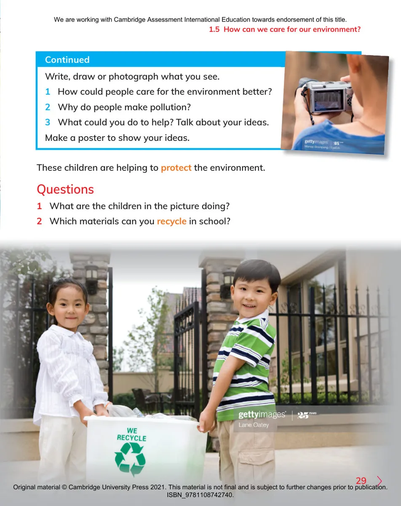
We are working with Cambridge Assessment International Education towards endorsement of this title.
1.5 How can we care for our environment?
Continued
Write, draw or photograph what you see.
1 How could people care for the environment better?
2 Why do people make pollution?
3 What could you do to help? Talk about your ideas.
Make a poster to show your ideas.
These children are helping to protect the environment.
Questions
1 What are the children in the picture doing?
2 Which materials can you recycle in school?
29
Original material © Cambridge University Press 2021. This material is not final and is subject to further changes prior to publication.
ISBN_9781108742740.
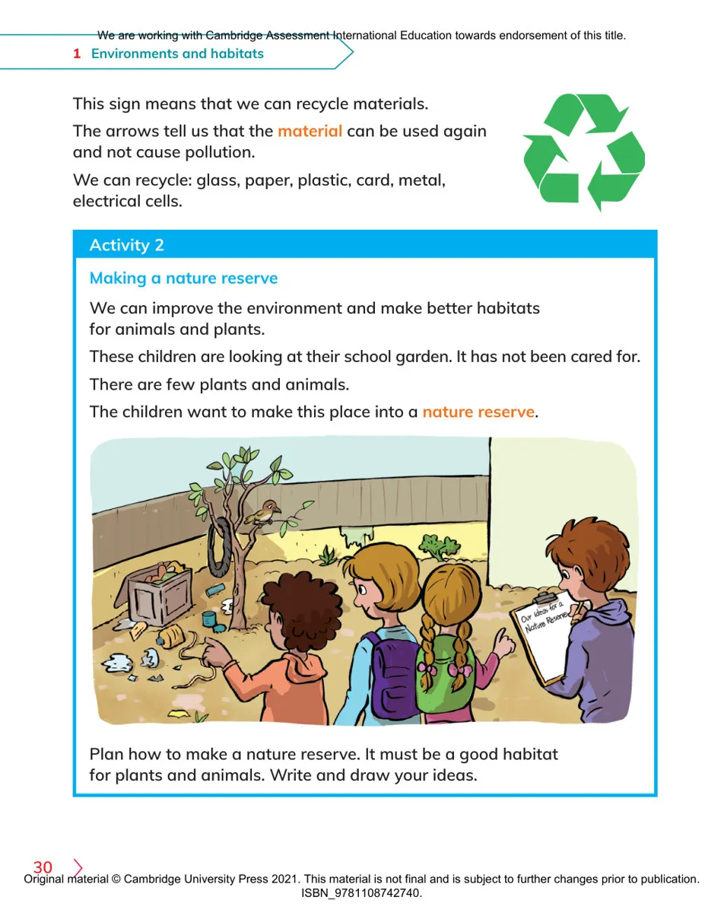
We are working with Cambridge Assessment International Education towards endorsement of this title.
1Environments and habitats
This sign means that we can recycle materials.
The arrows tell us that the material can be used again
and not cause pollution.
We can recycle: glass, paper, plastic, card, metal,
electrical cells.
Activity 2
Making a nature reserve
We can improve the environment and make better habitats
for animals and plants.
These children are looking at their school garden. It has not been cared for.
There are few plants and animals.
The children want to make this place into a nature reserve.
Plan how to make a nature reserve. It must be a good habitat
for plants and animals. Write and draw your ideas.
30
Original material © Cambridge University Press 2021. This material is not final and is subject to further changes prior to publication.
ISBN_9781108742740.
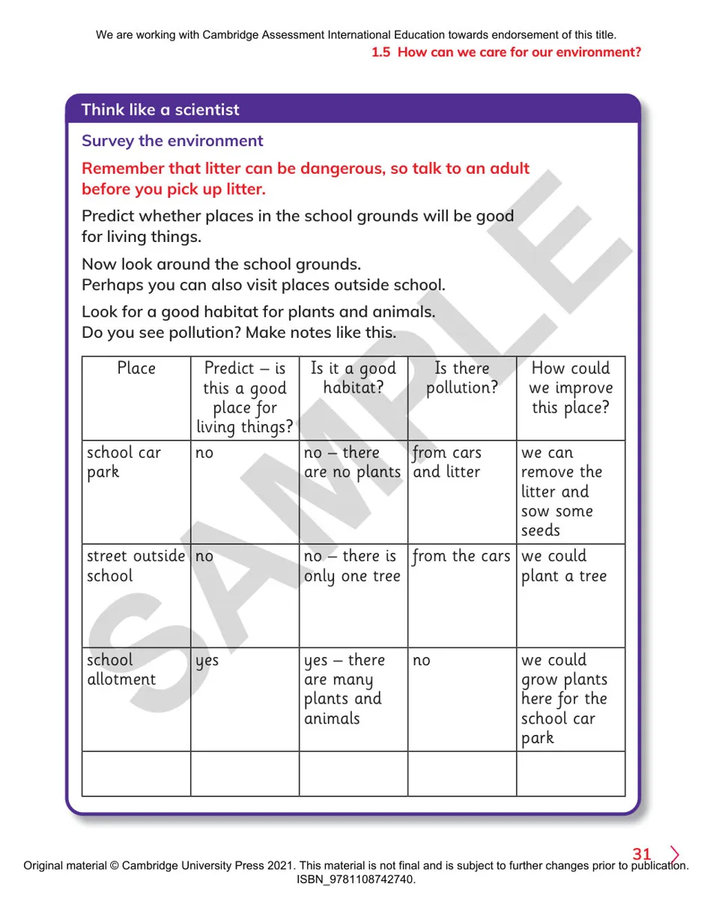
We are working with Cambridge Assessment International Education towards endorsement of this title.
1.5 How can we care for our environment?
1.5 How can we care for our environment?
Think like a scientist
Survey the environment
Remember that litter can be dangerous, so talk to an adult
before you pick up litter.
Predict whether places in the school grounds will be good
for living things.
Now look around the school grounds.
Perhaps you can also visit places outside school.
Look for a good habitat for plants and animals.
Do you see pollution? Make notes like this.
Is it a good
Is there
pollution?
How could
we improve
Place
Predict – is
this a good
habitat?
this place?
place for
living things?
we can
remove the
litter and
sow some
seeds
street outside
school
school car
park
no
no – there
are no plants
from cars
and litter
no
no – there is
only one tree
from the carswe could
plant a tree
no
we could
grow plants
here for the
school car
park
school
allotment
yes
yes – there
are many
plants and
animals
31
31
Original material © Cambridge University Press 2021. This material is not final and is subject to further changes prior to publication.
ISBN_9781108742740.
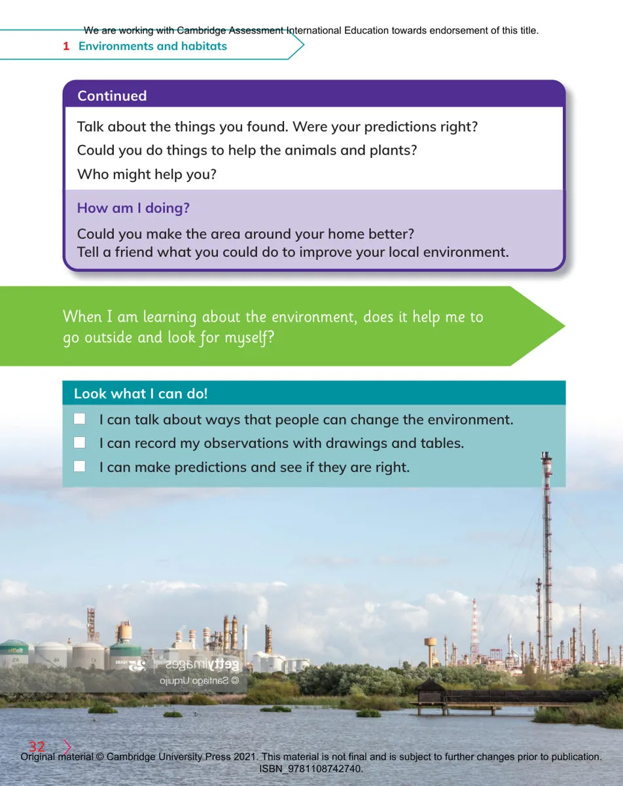
We are working with Cambridge Assessment International Education towards endorsement of this title.
1Environments and habitats
Continued
Talk about the things you found. Were your predictions right?
Could you do things to help the animals and plants?
Who might help you?
How am I doing?
Could you make the area around your home better?
Tell a friend what you could do to improve your local environment.
When I am learning about the environment, does it help me to
go outside and look for myself?
Look what I can do!
I can talk about ways that people can change the environment.
I can record my observations with drawings and tables.
I can make predictions and see if they are right.
32
32
32
Original material © Cambridge University Press 2021. This material is not final and is subject to further changes prior to publication.
ISBN_9781108742740.
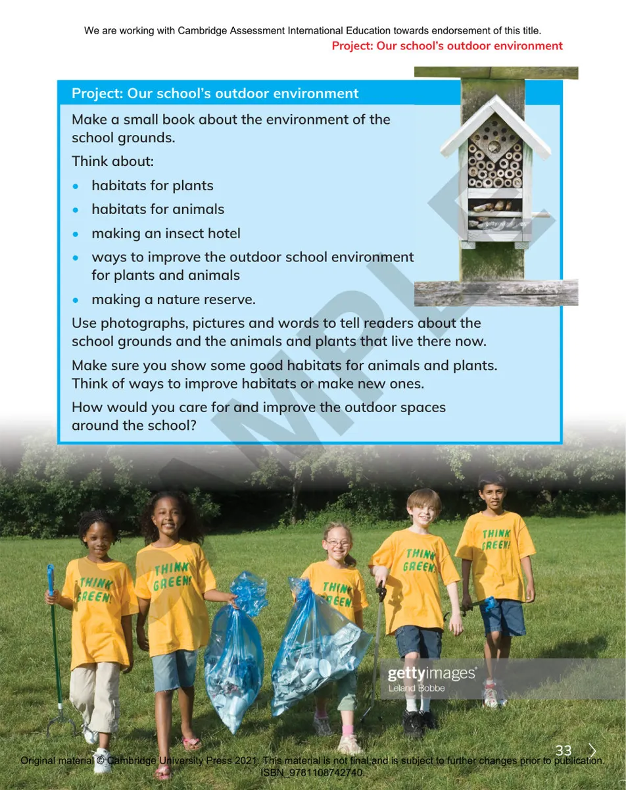
We are working with Cambridge Assessment International Education towards endorsement of this title.
Project: Our school’s outdoor environment
Project: Our school’s outdoor environment
Make a small book about the environment of the
school grounds.
Think about:
• habitats for plants
• habitats for animals
• making an insect hotel
• ways to improve the outdoor school environment
for plants and animals
• making a nature reserve.
Use photographs, pictures and words to tell readers about the
school grounds and the animals and plants that live there now.
Make sure you show some good habitats for animals and plants.
Think of ways to improve habitats or make new ones.
How would you care for and improve the outdoor spaces
around the school?
33
Original material © Cambridge University Press 2021. This material is not final and is subject to further changes prior to publication.
ISBN_9781108742740.
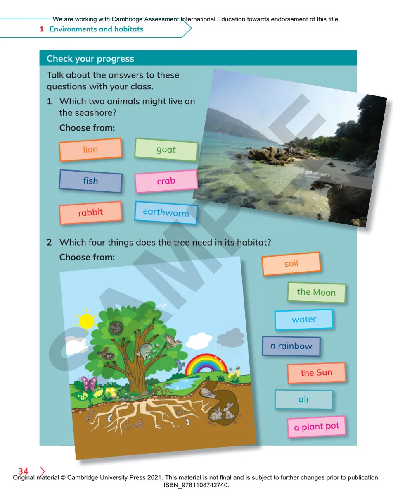
We are working with Cambridge Assessment International Education towards endorsement of this title.
1Environments and habitats
Check your progress
Talk about the answers to these
questions with your class.
n
1 Which two animals might live on
the seashore?
Choose from:
goat
lion
crab
fish
earthworm
rabbit
2 Which four things does the tree need in its habitat?
Choose from:
Choose from:
soil
the Moon
water
a rainbow
the Sun
air
a plant pot
34
Original material © Cambridge University Press 2021. This material is not final and is subject to further changes prior to publication.
ISBN_9781108742740.
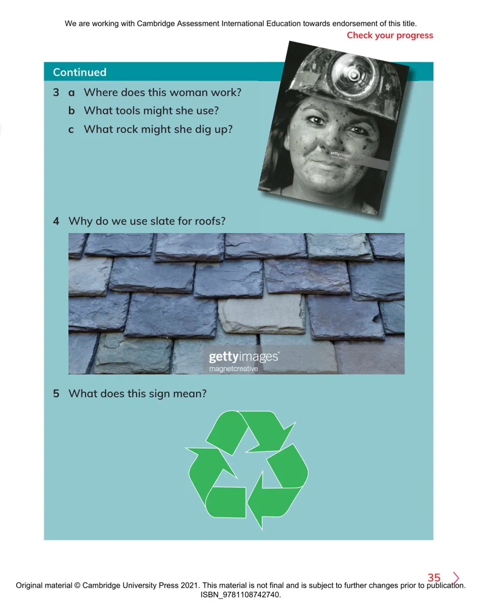
We are working with Cambridge Assessment International Education towards endorsement of this title.
Check your progress
Continued
3
a Where does this woman work?
b What tools might she use?
c What rock might she dig up?
4 Why do we use slate for roofs?
5 What does this sign mean?
35
Original material © Cambridge University Press 2021. This material is not final and is subject to further changes prior to publication.
ISBN_9781108742740.
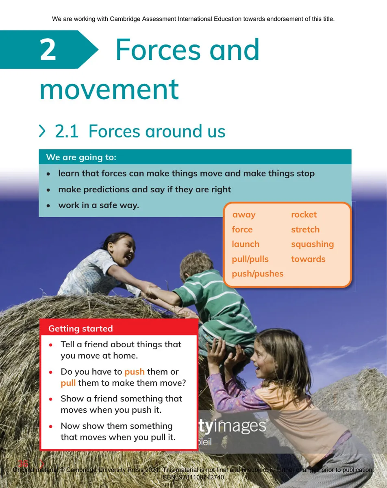
We are working with Cambridge Assessment International Education towards endorsement of this title.
2
Forces and
movement
2.1 Forces around us
We are going to:
• learn that forces can make things move and make things stop
• make predictions and say if they are right
• work in a safe way.
away
rocket
force
stretch
launch
squashing
pull/pulls
towards
push/pushes
Getting started
• Tell a friend about things that
you move at home.
• Do you have to push them or
pull them to make them move?
• Show a friend something that
moves when you push it.
• Now show them something
that moves when you pull it.
36
Original material © Cambridge University Press 2021. This material is not final and is subject to further changes prior to publication.
ISBN_9781108742740.
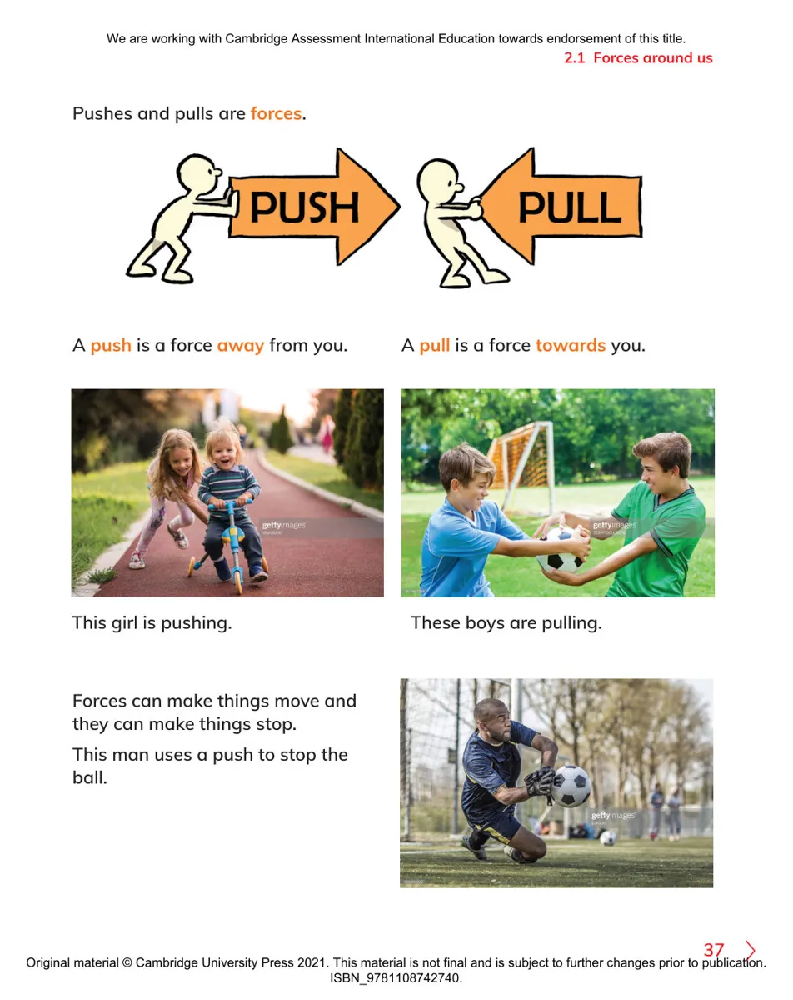
We are working with Cambridge Assessment International Education towards endorsement of this title.
2.1 Forces around us
Pushes and pulls are forces.
A push is a force away from you. A pull is a force towards you.
This girl is pushing. These boys are pulling.
Forces can make things move and
they can make things stop.
This man uses a push to stop the
ball.
37
Original material © Cambridge University Press 2021. This material is not final and is subject to further changes prior to publication.
ISBN_9781108742740.
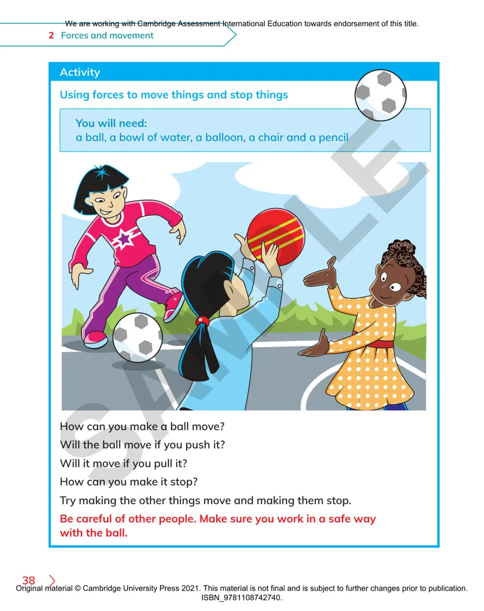
We are working with Cambridge Assessment International Education towards endorsement of this title.
2Forces and movement
Activity
Using forces to move things and stop things
You will need:
a ball, a bowl of water, a balloon, a chair and a pencil
How can you make a ball move?
Will the ball move if you push it?
Will it move if you pull it?
How can you make it stop?
Try making the other things move and making them stop.
Be careful of other people. Make sure you work in a safe way
with the ball.
38
Original material © Cambridge University Press 2021. This material is not final and is subject to further changes prior to publication.
ISBN_9781108742740.
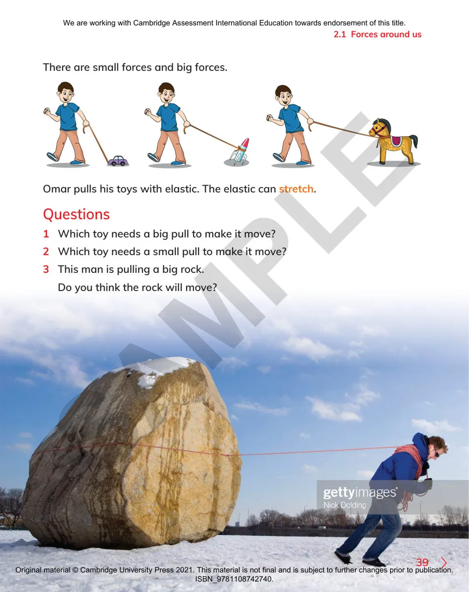
We are working with Cambridge Assessment International Education towards endorsement of this title.
2.1 Forces around us
There are small forces and big forces.
Omar pulls his toys with elastic. The elastic can stretch.
Questions
1 Which toy needs a big pull to make it move?
2 Which toy needs a small pull to make it move?
3 This man is pulling a big rock.
Do you think the rock will move?
39
39
39
Original material © Cambridge University Press 2021. This material is not final and is subject to further changes prior to publication.
ISBN_9781108742740.
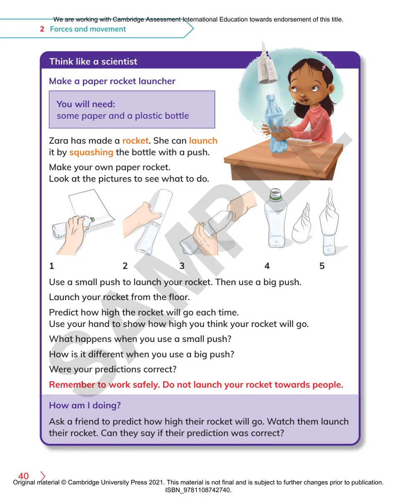
We are working with Cambridge Assessment International Education towards endorsement of this title.
2Forces and movement
Think like a scientist
Make a paper rocket launcher
You will need:
some paper and a plastic bottle
Zara has made a rocket. She can launch
it by squashing the bottle with a push.
Make your own paper rocket.
Look at the pictures to see what to do.
1
2
3
4
5
Use a small push to launch your rocket. Then use a big push.
Launch your rocket from the floor.
Predict how high the rocket will go each time.
Use your hand to show how high you think your rocket will go.
What happens when you use a small push?
How is it different when you use a big push?
Were your predictions correct?
Remember to work safely. Do not launch your rocket towards people.
How am I doing?
Ask a friend to predict how high their rocket will go. Watch them launch
their rocket. Can they say if their prediction was correct?
40
Original material © Cambridge University Press 2021. This material is not final and is subject to further changes prior to publication.
ISBN_9781108742740.
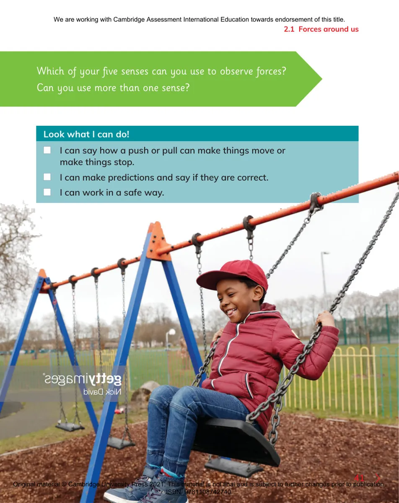
We are working with Cambridge Assessment International Education towards endorsement of this title.
2.1 Forces around us
Which of your five senses can you use to observe forces?
Can you use more than one sense?
Look what I can do!
I can say how a push or pull can make things move or
make things stop.
I can make predictions and say if they are correct.
I can work in a safe way.
41
41
Original material © Cambridge University Press 2021. This material is not final and is subject to further changes prior to publication.
ISBN_9781108742740.
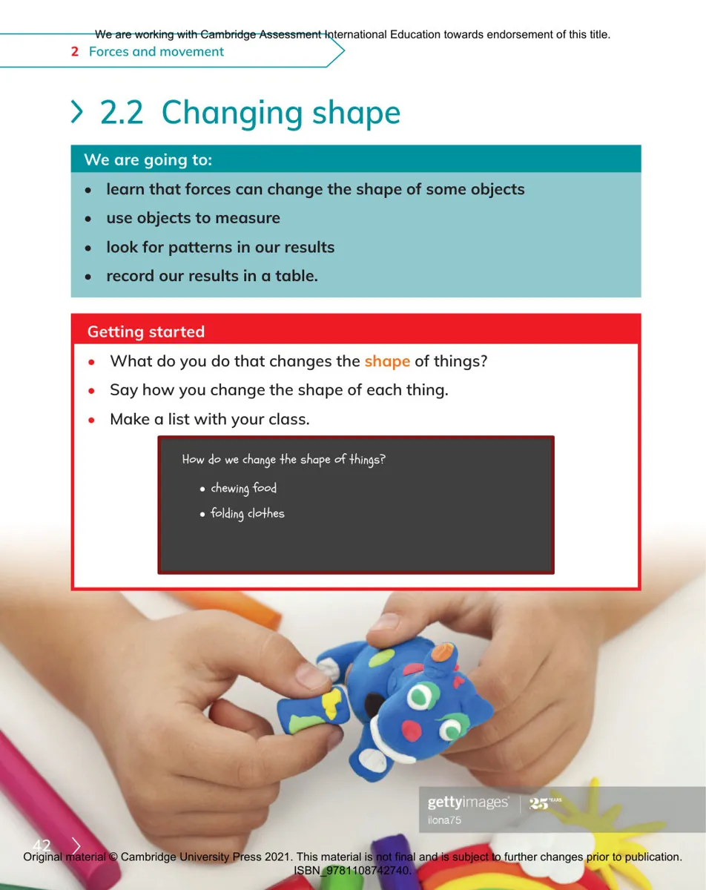
We are working with Cambridge Assessment International Education towards endorsement of this title.
2Forces and movement
2.2 Changing shape
We are going to:
• learn that forces can change the shape of some objects
• use objects to measure
• look for patterns in our results
• record our results in a table.
Getting started
• What do you do that changes the shape of things?
• Say how you change the shape of each thing.
• Make a list with your class.
How do we change the shape of things?
•chewing food
•folding clothes
42
Original material © Cambridge University Press 2021. This material is not final and is subject to further changes prior to publication.
ISBN_9781108742740.
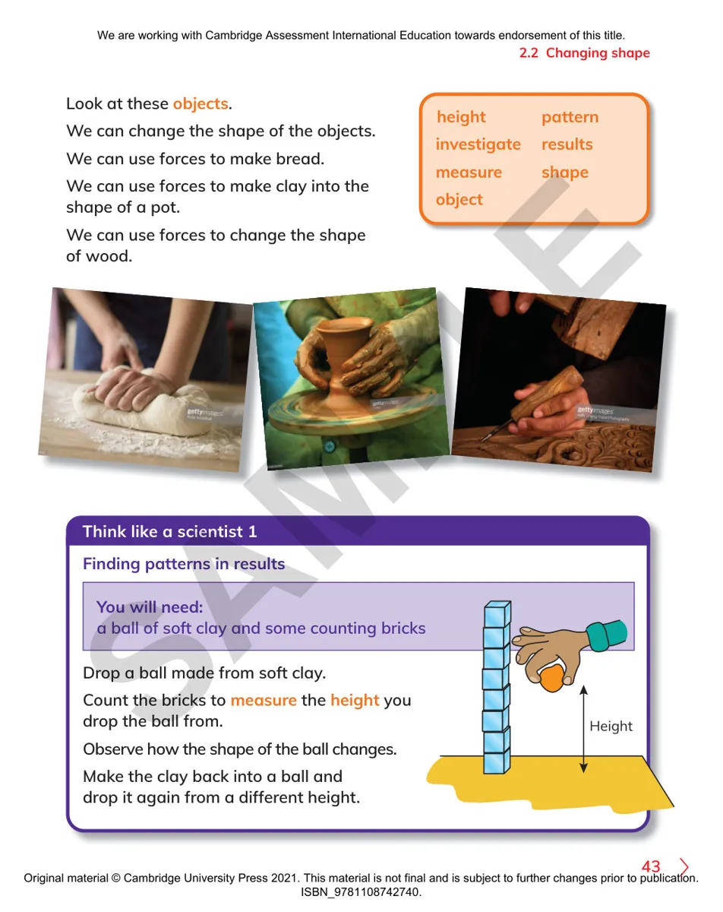
We are working with Cambridge Assessment International Education towards endorsement of this title.
2.2 Changing shape
Look at these objects.
pattern
We can change the shape of the objects.
results
We can use forces to make bread.
shape
We can use forces to make clay into the
shape of a pot.
We can use forces to change the shape
of wood.
height
investigate
measure
object
Think like a scientist 1
Finding patterns in results
You will need:
a ball of soft clay and some counting bricks
Drop a ball made from soft clay.
Count the bricks to measure the height you
drop the ball from.
Observe how the shape of the ball changes.
Make the clay back into a ball and
drop it again from a different height.
Height
43
Original material © Cambridge University Press 2021. This material is not final and is subject to further changes prior to publication.
ISBN_9781108742740.
We are working with Cambridge Assessment International Education towards endorsement of this title.
2Forces and movement
Continued
Record your results by writing or
drawing in a table like this one.
Height
Result
2 bricks
4 bricks
6 bricks
8 bricks
How does the result change for
the different heights?
Is there a pattern?
A pattern in results is when there is a similar change in the
result each time.
Use the pattern to predict what will happen if you drop the
ball from a height of 10 bricks.
Think like a scientist 2
How forces can change rubber bands
You will need:
some books, a big rubber band, sticky notes, a small rubber band
and a paperclip
Look at the pictures to see what to do.
The books are pulling on the rubber band.
44
Original material © Cambridge University Press 2021. This material is not final and is subject to further changes prior to publication.
ISBN_9781108742740.
We are working with Cambridge Assessment International Education towards endorsement of this title.
2.2 Changing shape
Continued
Investigate what happens to the rubber band when there is a bigger pull.
Use the sticky notes to measure the length of the rubber band.
Record your results in a table like this.
Number of books
Number of sticky notes
0
1
1
2
3
Try to find the pattern in your results.
How am I doing?
Check your friends’ measurements.
Have they measured the length of the rubber band correctly?
Did you add one book each time?
Was that a good way to do take the measurements?
Lola has done an investigation to see how forces change rubber bands.
Here are her results.
There is no
pattern in my
Number of books
Number of sticky
notes
0
1
3
4
1
2
2
3
results.
45
Original material © Cambridge University Press 2021. This material is not final and is subject to further changes prior to publication.
ISBN_9781108742740.
We are working with Cambridge Assessment International Education towards endorsement of this title.
2Forces and movement
Questions
1 Lola is wrong. Can you see why?
2 Why is it a good idea to add one book each time?
Look what I can do!
I can say how forces can change the shape of some objects.
I can use objects to measure.
I can find patterns in my results.
I can record my results in a table.
46
Original material © Cambridge University Press 2021. This material is not final and is subject to further changes prior to publication.
ISBN_9781108742740.
We are working with Cambridge Assessment International Education towards endorsement of this title.
2.3 Changing speed
2.3 Changing speed
We are going to:
• find out how forces make things go faster or slower
• ask questions about how to make things go faster or slower
• look for patterns in our results
• investigate carefully and safely.
Getting started
Mia has a new bike.
• How can she go faster?
• How can she go slower?
• Tell your friends what you think.
To go faster on a bike you push on the
pedals.
To go slower you pull on the brakes.
Going faster is called speeding up.
Going slower is called slowing down.
Your speed is how fast you are moving.
When something speeds up or slows
down it is because of a force.
Question
How can you make other things speed
up or slow down?
brakes
explain
fast
faster
pedals
slow
slower
slow down
speed
speed up
brakes
pedals
47
Original material © Cambridge University Press 2021. This material is not final and is subject to further changes prior to publication.
ISBN_9781108742740.
We are working with Cambridge Assessment International Education towards endorsement of this title.
2Forces and movement
Think like a scientist 1
Asking questions about speed
You will need:
some sticky notes
Look at the children
in the park.
Dai uses some cards to make a question.
Do you know the answer?
Think of some other questions about speed.
Talk about how to find out the
answers with your friends.
48
Original material © Cambridge University Press 2021. This material is not final and is subject to further changes prior to publication.
ISBN_9781108742740.
We are working with Cambridge Assessment International Education towards endorsement of this title.
2.3 Changing speed
Did you fi nd it easy to think of questions about speed?
Asking questions is an important part of science.
Can you ask any other science questions?
Think like a scientist 2
Blow the ball
You will need:
a ball
Sofia and Marcus are trying to make a ball speed up and slow down.
Marcus pushes the ball towards Sofia. Sofia blows towards the ball.
The air pushes the ball to make it go slower.
49
Original material © Cambridge University Press 2021. This material is not final and is subject to further changes prior to publication.
ISBN_9781108742740.
We are working with Cambridge Assessment International Education towards endorsement of this title.
2Forces and movement
Continued
How can they make the ball go faster
without touching it?
Try doing this with a ball.
Try to make the ball slow down and
speed up.
Make sure you use the ball safely.
The bigger the
push, the ...
Sofia thinks there is a pattern in how the ball moves.
Try to help her explain the pattern.
How am I doing?
Watch some friends as they blow a ball. Are they being safe?
Observe the ball carefully.
Can they make the ball slow down? Can they make it speed up?
50
Original material © Cambridge University Press 2021. This material is not final and is subject to further changes prior to publication.
ISBN_9781108742740.
We are working with Cambridge Assessment International Education towards endorsement of this title.
2.3 Changing speed
A bowling ball needs to have lots of speed to knock over the pins.
Question
How would you make a bowling ball go fast?
Look what I can do!
I can say how forces can make something move faster or slower.
I can ask questions about how to make something move
faster or slower.
I can find patterns in my results.
I can investigate carefully and safely.
51
Original material © Cambridge University Press 2021. This material is not final and is subject to further changes prior to publication.
ISBN_9781108742740.
We are working with Cambridge Assessment International Education towards endorsement of this title.
2Forces and movement
2.4 Changing direction
We are going to:
• find out how forces make things change direction
• predict what we think will happen
• say if our predictions are correct or not
• find out how a diagram is different to a picture.
Getting started
• Adjo is being pulled along. What is going to happen?
• How can Adjo not crash?
diagram
direction
turn
52
Original material © Cambridge University Press 2021. This material is not final and is subject to further changes prior to publication.
ISBN_9781108742740.
We are working with Cambridge Assessment International Education towards endorsement of this title.
2.4 Changing direction
2.4 Changing direction
When you are going one way
and then you turn to go a
different way you
change direction.
Forces are needed to make
things change direction.
This boat has pushed the water
to make it turn.
Activity
Feel the force
The children are playing a running game.
They have to change direction when someone says ‘Change’.
Try playing this game.
How do you change direction?
Can you feel the forces you use?
53
Original material © Cambridge University Press 2021. This material is not final and is subject to further changes prior to publication.
ISBN_9781108742740.
We are working with Cambridge Assessment International Education towards endorsement of this title.
2Forces and movement
Think like a scientist
This way or that way?
You will need:
a ball, a large piece of paper and two coloured marker pens
Arun and Zara are investigating how a ball changes direction
when they push it.
They make a diagram to show their prediction. A diagram is different
from a picture. Diagrams only show the things that are important.
They have labels and arrows.
Arun and Zara then test their prediction.
Was their prediction correct?
Try doing this investigation.
Draw a diagram to show your prediction and your result.
Use a different colour for your prediction.
How am I doing?
Have a look at your friends’ diagrams.
Can they say if their predictions were correct or not?
54
Original material © Cambridge University Press 2021. This material is not final and is subject to further changes prior to publication.
ISBN_9781108742740.
We are working with Cambridge Assessment International Education towards endorsement of this title.
2.4 Changing direction
2.4 Changing direction
Sometimes, when a prediction is wrong you learn something new.
Were your predictions correct?
What did you learn?
These people are playing wheelchair basketball.
Question
How can they make the wheelchairs change direction?
Look what I can do!
I can say how forces can make something change direction.
I can predict what I think will happen.
I can say if my predictions are correct or not.
I can say how a diagram is different to a picture.
55
Original material © Cambridge University Press 2021. This material is not final and is subject to further changes prior to publication.
ISBN_9781108742740.
We are working with Cambridge Assessment International Education towards endorsement of this title.
2Forces and movement
Project: How people use forces
Paco is a school caretaker.
How does he use forces to look after the school?
pull
He uses forces
to sweep.
push
He uses forces to
Push
mend things.
Push
He uses forces to
move things.
Are there other people who use forces in your school?
Do you have a cook, a cleaner or a gardener who use forces?
Do the learners and teachers use forces?
Choose some people in your school and make a list of the
different ways they use forces.
Draw pictures of them or photograph them using forces.
Label the pushes and pulls used in your drawings.
56
Original material © Cambridge University Press 2021. This material is not final and is subject to further changes prior to publication.
ISBN_9781108742740.
We are working with Cambridge Assessment International Education towards endorsement of this title.
Check your progress
Check your progress
Talk about the answers to these questions with your classmates.
1 Is this girl pulling or pushing? How do you know?
2 Here is a ball bouncing towards Kamili.
a How can she stop it?
b How can she make it change direction?
57
Original material © Cambridge University Press 2021. This material is not final and is subject to further changes prior to publication.
ISBN_9781108742740.
We are working with Cambridge Assessment International Education towards endorsement of this title.
2Forces and movement
Continued
3 Vishni and Chipo are riding bicycles.
a How can Chipo go faster?
b How can Vishni slow down?
c How can they change direction?
4 Nico makes a prediction.
Is his prediction correct?
If I kick the ball
straight at the net,
I will score a goal!
58
Original material © Cambridge University Press 2021. This material is not final and is subject to further changes prior to publication.
ISBN_9781108742740.
We are working with Cambridge Assessment International Education towards endorsement of this title.
3
Getting materials
right
3.1 Natural and made materials
We are going to:
• learn about where materials come from
• learn which materials are natural and which materials
have been made by people
• use books, videos or the internet to answer questions.
Getting started
• Do you know what paper is made from?
• What other materials can you see in this picture?
• Do all materials have to be made?
• Talk to a friend about where these materials come from.
cotton
plastic
glass
rubber
natural
sand
oil
water
paper
wood
59
Original material © Cambridge University Press 2021. This material is not final and is subject to further changes prior to publication.
ISBN_9781108742740.
We are working with Cambridge Assessment International Education towards endorsement of this title.
3Getting materials right
There are many natural materials. They come from the world around us.
The materials are in these pictures are natural.
Sand is natural.
Wood is natural.
Water is natural.
Rock is natural.
This woman is getting
rubber from a rubber tree.
Rubber is natural.
al.
Oil is natural.
Oil comes from underground.
60
Original material © Cambridge University Press 2021. This material is not final and is subject to further changes prior to publication.
ISBN_9781108742740.
We are working with Cambridge Assessment International Education towards endorsement of this title.
3.1 Natural and made materials
Other materials have to be made by people.
Glass is made from sand.
Paper is made from wood.
Questions
1 Where does wood come from?
2 Is rock a natural material or a made material?
3 Name a type of rock.
4 What else can we use rubber for?
Activity
Natural or made materials?
Look around your school for different materials.
Talk about the materials you find.
Where do they come from?
Are they natural or made?
Draw and label the materials and where
they come from.
How am I doing?
Look at a friend’s work. Tell them if you think they are right or wrong.
Plastic is made from oil.
61
Original material © Cambridge University Press 2021. This material is not final and is subject to further changes prior to publication.
ISBN_9781108742740.
We are working with Cambridge Assessment International Education towards endorsement of this title.
3Getting materials right
Think like a scientist
Finding out where materials come from
You will need:
a book, website or video about how materials are made
Cotton is a fabric used to make many clothes.
Where does cotton come from?
Try to find the answer in this book.
Use a book, website or video to find out where other materials come from.
You could try to find out more about rubber, plastic, glass or oil.
Draw and label pictures like this to record what you find out.
Cotton grows on a plant
It is made into fabric in a factory
It is used to make clothes
62
Original material © Cambridge University Press 2021. This material is not final and is subject to further changes prior to publication.
ISBN_9781108742740.
We are working with Cambridge Assessment International Education towards endorsement of this title.
3.1 Natural and made materials
We can answer science questions in different ways.
We used a book to fi nd the answer to the question about cotton.
Think of a different way to fi nd the answer to this question:
Is cotton fabric waterproof?
Look what I can do!
I can say where some materials come from.
I can name two or more natural materials and two or
more materials that have been made.
I can use a book, video or the internet to answer questions.
63
Original material © Cambridge University Press 2021. This material is not final and is subject to further changes prior to publication.
ISBN_9781108742740.
We are working with Cambridge Assessment International Education towards endorsement of this title.
3Getting materials right
3.2 Properties of materials
We are going to:
• learn about the properties of different materials
• learn that materials have more than one property
• ask questions about materials and find answers by observing
• put materials into groups using their properties.
Getting started
• How many different properties of materials can you think of?
Make a list.
• Try to name a material that has each property.
absorbent
property/
properties
smooth
characteristic
strong
rigid
dull
Venn diagram
rough
flexible
weak
shiny
64
64
64
Original material © Cambridge University Press 2021. This material is not final and is subject to further changes prior to publication.
ISBN_9781108742740.
We are working with Cambridge Assessment International Education towards endorsement of this title.
3.2 Properties of materials
Rock is rigid but rubber can be flexible.
Water cannot get through plastic.
Water soaks into most fabric.
Plastic is waterproof.
Most fabric is absorbent.
The properties of materials tell us what a material is like.
The properties of a material are also called the characteristics
of the material.
Materials have many different characteristics.
65
65
Original material © Cambridge University Press 2021. This material is not final and is subject to further changes prior to publication.
ISBN_9781108742740.
We are working with Cambridge Assessment International Education towards endorsement of this title.
3Getting materials right
Metal is strong but it has other characteristics.
Questions
1 Is metal waterproof or absorbent?
2 What other characteristics does metal have?
Think like a scientist 1
Questions about materials
You will need:
some objects made of different materials
Here is a question about a material.
Is paper strong or weak?
You can find the answer by testing paper.
Paper is weak.
66
Original material © Cambridge University Press 2021. This material is not final and is subject to further changes prior to publication.
ISBN_9781108742740.
We are working with Cambridge Assessment International Education towards endorsement of this title.
3.2 Properties of materials
Continued
Some materials may be sharp when broken. Do not touch sharp edges.
Here is another question. Is paper smooth or rough?
You can find the answer by observing paper.
Does it look smooth or rough? How does it feel?
Ask your own questions about materials.
Find the answers by testing or observing the material.
Record your results in a table like this.
Questions
MaterialIs it strong or
Is it smooth or
rough?
paper
weak
smooth
weak?
How am I doing?
Compare your results with others. Do you have the same answers?
If not, you could observe or test the materials again.
Think like a scientist 2
Using a Venn diagram for sorting
You will need:
some objects made of different materials and a Venn diagram
We can use the properties of materials to sort them.
67
Original material © Cambridge University Press 2021. This material is not final and is subject to further changes prior to publication.
ISBN_9781108742740.
We are working with Cambridge Assessment International Education towards endorsement of this title.
3Getting materials right
Continued
Sofia and Arun are using a Venn diagram to sort some objects.
The metal key is shiny but not flexible. It goes in the circle labelled ‘shiny’.
The writing paper is dull, not shiny and it is flexible.
It goes in the circle labelled ‘flexible’.
The plastic bottle is shiny and flexible. It goes in both circles.
Where should the glass bottle go?
Choose two different characteristics of materials and use a Venn
diagram to sort some objects.
How am I doing?
Ask a friend to look at your Venn diagram. Is everything in the right circle?
If not, can they tell you why?
68
Original material © Cambridge University Press 2021. This material is not final and is subject to further changes prior to publication.
ISBN_9781108742740.
We are working with Cambridge Assessment International Education towards endorsement of this title.
3.2 Properties of materials
How is using a Venn diagram more useful than
sorting things into two different groups?
Look what I can do!
I can talk about the properties of four or more materials.
I can name two or more properties of some materials.
I can ask a question about a material and show how to find the
answer.
I can use properties to sort materials into groups.
69
69
69
Original material © Cambridge University Press 2021. This material is not final and is subject to further changes prior to publication.
ISBN_9781108742740.
We are working with Cambridge Assessment International Education towards endorsement of this title.
3Getting materials right
3.3 Using the right material
We are going to:
• find out why a material can be good for making some objects
but not others
• record our observations in a table.
Getting started
• Why are windows made of glass?
• Could a window be made of a different material?
• Talk to a friend about your ideas.
Every material has properties or characteristics. The characteristics
make the material good for making some objects, but not others.
Glass is good for a window because it is transparent. This means
we can see through it.
transparent
70
70
70
Original material © Cambridge University Press 2021. This material is not final and is subject to further changes prior to publication.
ISBN_9781108742740.
We are working with Cambridge Assessment International Education towards endorsement of this title.
3.3 Using the right material
Plastic is waterproof
and comes in many
colours. We can
make plastic into
cups and bottles.
Wood is hard and
strong. We can
make wood into
chairs and tables.
Metal is strong
and can be sharp.
We make metal
into knives, forks
and spoons.
Metal is a sensible material for a bike because of the properties of metal.
Rubber is a silly material for a bike.
Questions
1 What would happen if a
bike was made of rubber?
2 What would happen to a
table made of chocolate?
Activity 1
Sensible and silly materials
Draw an object made of a silly material and the same object
made of a sensible material.
Talk about the properties that make the materials silly or sensible
for your object. Add labels to your pictures to show the properties.
71
Original material © Cambridge University Press 2021. This material is not final and is subject to further changes prior to publication.
ISBN_9781108742740.
We are working with Cambridge Assessment International Education towards endorsement of this title.
3Getting materials right
Activity 2
Why is that material useful?
Find objects that are made of only one material.
Talk about why each object is made of that material.
Record your observations and ideas in a table like this.
Object
Material
Useful properties of that material
chair
plastic
Strong so does not break.
Flexible to make it comfortable.
Light so it is easy to move.
Sam has another property of
plastic that she thinks is useful
for a chair. Do you think she
is right?
Sam is not right. Plastic is waterproof
but we do not need a waterproof material
to make an indoor chair.
How am I doing?
Have a look at the properties in your table.
Are they all needed to make the object?
Look what I can do!
I can say why a material has been used to make an object.
I can record observations in a table.
Plastic is good for a chair
because it is waterproof.
72
Original material © Cambridge University Press 2021. This material is not final and is subject to further changes prior to publication.
ISBN_9781108742740.
We are working with Cambridge Assessment International Education towards endorsement of this title.
3.4 Testing materials
3.4 Testing materials
We are going to:
• learn that we can test materials to find out their properties
• make predictions
• use bricks or counters to measure
• use and make a block graph.
Getting started
• How do you know if a fabric is waterproof?
• Look at the fabric of your clothes. Is the fabric waterproof?
• What could you do to fi nd out?
• Talk about your ideas with your class.
block graph
73
73
73
Original material © Cambridge University Press 2021. This material is not final and is subject to further changes prior to publication.
ISBN_9781108742740.
We are working with Cambridge Assessment International Education towards endorsement of this title.
3Getting materials right
We can test things to find out
their properties.
We can try to bend materials to find out if
they are flexible.
We can test fabrics to find out if they are
waterproof or absorbent.
Is this umbrella waterproof or absorbent?
Testing cushions
Zara and Marcus want to know which cushion
is the softest.
They put a rock
on each cushion
to see how far it
goes down.
They use a ruler
and some bricks
to measure how
far down the
rock goes.
Zara and Marcus
make a block graph
of their results.
5
4
3
2
1
74
Original material © Cambridge University Press 2021. This material is not final and is subject to further changes prior to publication.
ISBN_9781108742740.
We are working with Cambridge Assessment International Education towards endorsement of this title.
3.4 Testing materials
Questions
1 Which cushion is the softest?
2 Which cushion is the hardest?
Think like a scientist 1
Which fabric is best for an umbrella?
You will need:
some different fabrics and some water
An umbrella needs to be waterproof.
Predict which fabric will be most waterproof.
Put a small drop of water onto each fabric and observe what happens.
If the water stays on top the fabric is waterproof.
If the water is absorbed the fabric is absorbent.
Use your observations to sort the fabrics into a table like this.
Water proof
Absorbent
Were your predictions correct?
75
Original material © Cambridge University Press 2021. This material is not final and is subject to further changes prior to publication.
ISBN_9781108742740.
We are working with Cambridge Assessment International Education towards endorsement of this title.
3Getting materials right
Think like a scientist 2
Which paper makes the strongest bag?
You will need:
some different types of paper, a paperclip, a rubber band,
a pencil and some plastic bricks or counters
Look at different types of paper.
Predict which paper is the strongest.
Look at the pictures to see how to test the paper.
Use the bricks to measure how long the rubber band is
when the paper tears.
Make a block graph of your results.
Were your predictions correct?
Which paper would make the strongest bag?
Do not stretch the rubber bands too much.
They could break and hurt people.
How am I doing?
Compare your results with others. If they are not the same
you may need to test the paper again to check.
76
Original material © Cambridge University Press 2021. This material is not final and is subject to further changes prior to publication.
ISBN_9781108742740.
We are working with Cambridge Assessment International Education towards endorsement of this title.
3.4 Testing materials
Sometimes it can be diffi cult to measure correctly.
What can you do if you are not sure your
measurement is correct?
Look what I can do!
I can test materials to find out their properties.
I can make a prediction.
I can measure using bricks or counters.
I can use and make a block graph.
77
Original material © Cambridge University Press 2021. This material is not final and is subject to further changes prior to publication.
ISBN_9781108742740.
We are working with Cambridge Assessment International Education towards endorsement of this title.
3Getting materials right
3.5 Changing materials
We are going to:
• find out how to change some materials
• ask questions and talk about how to find out the answers
• make labelled diagrams
• learn how a diagram is different to a picture.
Getting started
• Think of a way to change a material so it has different properties.
• How is this wood being changed?
• How can ice be changed?
• Draw your ideas. Then talk about them with your class.
information liquid melt mixture solid
78
Original material © Cambridge University Press 2021. This material is not final and is subject to further changes prior to publication.
ISBN_9781108742740.
We are working with Cambridge Assessment International Education towards endorsement of this title.
3.5 Changing materials
Making a cake
Arun is making a cake. He has some
solid materials: flour, sugar, butter
and chocolate. He breaks some eggs.
These are a liquid.
He changes these materials to make
the cake.
First, he makes a mixture of three
different materials.
He mixes the sugar and butter
together, then adds the eggs.
Next, he makes the chocolate melt
by making it hot.
The solid chocolate changes into
liquid chocolate.
79
Original material © Cambridge University Press 2021. This material is not final and is subject to further changes prior to publication.
ISBN_9781108742740.
We are working with Cambridge Assessment International Education towards endorsement of this title.
3Getting materials right
Then he adds the liquid chocolate
and the flour to his mixture.
Now he heats the mixture in the oven.
The heat makes the liquid egg
change into a new solid material.
This new material holds the other
materials together so the cake can
keep its shape.
Questions
1 Which material changed from a solid to a liquid when it
was heated?
2 Which material changed from a liquid to a solid when it
was heated?
When we heat liquid egg, we make a new material.
The new solid material cannot be changed back into liquid egg.
Heating solid chocolate only changes the properties of chocolate.
The liquid chocolate can be made back into solid chocolate by
making it cold.
80
Original material © Cambridge University Press 2021. This material is not final and is subject to further changes prior to publication.
ISBN_9781108742740.
We are working with Cambridge Assessment International Education towards endorsement of this title.
3.5 Changing materials
Think like a scientist 1
Observing toast
You will need:
some bread and a magnifying glass
Yellow crumbs
Small holes
Brown crumbs
Crust
This is a picture of some bread.
This is a diagram of some bread.
A diagram is like a picture but it only shows the important information.
A diagram has labels to show more information.
Here the diagram does not show the knife or the cutting board
because we are only learning about the bread.
Observe some bread carefully. Use a magnifying glass to see closely.
Is it flexible or rigid?
Draw a diagram of what the bread looks like.
Label your diagram.
Your teacher will now heat the bread in a grill or a toaster.
What do you predict will happen?
Do not touch the toaster or grill. They get very hot.
Observe what happens to the bread. Use the magnifying glass again.
Draw another diagram to show how the material has changed.
81
Original material © Cambridge University Press 2021. This material is not final and is subject to further changes prior to publication.
ISBN_9781108742740.
We are working with Cambridge Assessment International Education towards endorsement of this title.
3Getting materials right
Continued
The bread has been changed into a new material that has
different properties.
The new material is a different colour and it is harder and
more rigid than the bread.
It tastes different, too.
Think like a scientist 2
Can you stop peeled fruit going brown?
You will need:
some peeled fruit and some different liquids
When you peel an apple or a
banana it starts to turn brown.
Air makes the material of
the apple change into a
new material.
Jun has a question.
How can Jun find out the
answer to her question?
Talk about your ideas with
a friend.
82
Original material © Cambridge University Press 2021. This material is not final and is subject to further changes prior to publication.
ISBN_9781108742740.
Will water stop
my apple from going
brown?
We are working with Cambridge Assessment International Education towards endorsement of this title.
3.5 Changing materials
Continued
Look at the things you can investigate.
What might stop the fruit going brown?
Ask your own question ‘Will
stop my fruit from going brown?’
How will you find out the answer to your question?
Draw a diagram to show what you will do in your investigation.
Now try your investigation and draw a diagram of the result.
Remember to label the important things in the diagram.
How am I doing?
Look at a friend’s question and their diagram.
Did their investigation find out the answer to their question?
Tell them what you think.
Why is a diagram often more useful than a picture?
How does a diagram help you to learn?
Look what I can do!
I can describe how some materials can be changed.
I can ask a question and talk about how to find out the answer.
I can draw and label a diagram.
I can say how a diagram is different from a picture.
83
Original material © Cambridge University Press 2021. This material is not final and is subject to further changes prior to publication.
ISBN_9781108742740.
We are working with Cambridge Assessment International Education towards endorsement of this title.
3Getting materials right
Project: Materials can damage the Earth
We know that paper is made from wood. Trees are cut down
to make paper. This is bad for forests and for the animals and
plants that live in forest habitats.
But we can recycle used paper to make new paper.
This saves trees.
We know that plastic is made from oil. Oil comes from
underground. Getting the oil out causes pollution. Used plastic
is often dropped as litter. There is now lots of plastic pollution
in our rivers and in the sea.
But we can recycle used plastic to make new plastic.
This mean less pollution.
84
84
84
Original material © Cambridge University Press 2021. This material is not final and is subject to further changes prior to publication.
ISBN_9781108742740.
We are working with Cambridge Assessment International Education towards endorsement of this title.
Project: Materials can damage the Earth
Continued
Science teaches us that we are damaging our world.
Science teaches us that we should use recycled paper and
plastic and we should not drop litter.
Use books or the internet to find out some other things we
should do to help our planet.
Make a poster to tell others how they can help save planet Earth.
Tell people:
• how they can save trees
• how they can make less pollution
• why they should not drop litter.
Save animals
Don’t cut
down trees
I
Grow plants
CAN
Do not litter
HELP
Recycle
plastic
EARTH
Stop pollution
Ride a bike
Save water
85
Original material © Cambridge University Press 2021. This material is not final and is subject to further changes prior to publication.
ISBN_9781108742740.
We are working with Cambridge Assessment International Education towards endorsement of this title.
3Getting materials right
Check your progress
Talk about the answers to these questions with your class.
1 Which of these materials are natural and which have been made?
Plastic
Rock
Paper
Wood
Cotton
Three of these materials have been made.
What natural materials have they been made from?
2 Name two characteristics of these materials.
The first one has been done for you.
plastic
metal
glass
Plastic is smooth and shiny.
Glass
paper
rock
86
Original material © Cambridge University Press 2021. This material is not final and is subject to further changes prior to publication.
ISBN_9781108742740.
We are working with Cambridge Assessment International Education towards endorsement of this title.
Check your progress
Continued
3 Put the objects into the correct group
wooden
cotton
T-shirt
metal
paperclip
stone
pencil
flexible
hard
plastic
ruler
4 Which of these changes makes a new material?
Burning wood Melting chocolate
5 What happens to these materials when we heat them?
a egg
b ice
c bread
87
Original material © Cambridge University Press 2021. This material is not final and is subject to further changes prior to publication.
ISBN_9781108742740.
We are working with Cambridge Assessment International Education towards endorsement of this title.
4
Humans and
animals grow
4.1 Comparing animals
We are going to:
• find out how animals look similar and different
• ask our own questions about animals
• use books, videos or the internet to answer questions
• use and make block graphs.
Getting started
• Look at these animals.
How are they different?
How are they similar?
• Talk about your ideas
with your class.
bird feathers fur human mammal
88
Original material © Cambridge University Press 2021. This material is not final and is subject to further changes prior to publication.
ISBN_9781108742740.
We are working with Cambridge Assessment International Education towards endorsement of this title.
4.1 Comparing animals
Compare these animals.
The giraffe looks different from the zebra because it has a
longer neck.
The giraffe looks similar to the zebra because they both
have four legs and a tail.
Giraffes and zebras both have fur. Fur is similar to hair.
Animals that have hair or fur are called mammals.
People are a special kind of mammal.
We are called humans.
Zebra fur
Giraffe fur
Human hair
89
Original material © Cambridge University Press 2021. This material is not final and is subject to further changes prior to publication.
ISBN_9781108742740.
We are working with Cambridge Assessment International Education towards endorsement of this title.
4Humans and animals grow
Birds look different to mammals.
They do not have fur or hair.
Birds have feathers.
A bird looks different from a
human in many other ways.
A bird looks similar to a
human because they both
have two legs.
Questions
1 Find another way the giraffe
looks different from the zebra.
2 Find two other ways the giraffe
and zebra look similar.
3 How does a bird look different
from a human?
Think of as many ways as you can.
90
Original material © Cambridge University Press 2021. This material is not final and is subject to further changes prior to publication.
ISBN_9781108742740.
We are working with Cambridge Assessment International Education towards endorsement of this title.
4.1 Comparing animals
Think like a scientist 1
Asking questions about animals
You will need:
some books about animals and a computer
Marcus has a question about animals.
How can Marcus find out the answer?
Marcus does not have a real elephant to
observe so he uses a book, a video or
the internet.
He finds out that elephants do have hair.
Elephants are mammals like humans.
Write your own questions about
animals.
Use a book, a video or the internet
to find the answers.
Observing small animals
Sofia has another question about animals.
How can Sofia find out the answer?
Do elephants
have hair?
How many legs
do very small animals
have?
91
Original material © Cambridge University Press 2021. This material is not final and is subject to further changes prior to publication.
ISBN_9781108742740.
We are working with Cambridge Assessment International Education towards endorsement of this title.
4Humans and animals grow
Sofia looks for some very small
animals and observes them.
Sofia makes a block graph
to show her results.
Questions
1 How many animals did Sofia find with no legs?
2 How many animals did she find with 6 legs?
3 How many animals did she find in total?
Think like a scientist 2
How many legs?
You will need:
a magnifying glass
92
Original material © Cambridge University Press 2021. This material is not final and is subject to further changes prior to publication.
ISBN_9781108742740.
We are working with Cambridge Assessment International Education towards endorsement of this title.
4.1 Comparing animals
Continued
Find an outdoor habitat in your school.
Observe the small animals that live there.
Use a magnifying glass to make them easier to see.
How many legs do they have?
Do not touch animals that can sting or bite.
Make your own block chart to show your results.
How am I doing?
Look at one of the small animals with a friend.
If you count a different number of legs, count again to check.
Asking questions is an important part of being a scientist.
Do you ask questions about the world?
Are there any
Does asking questions help you to learn?
animals with
You could ask a question that helps
people fi nd out something new.
5 legs?
Look what I can do!
I can say how animals look similar and different.
I can ask my own questions about animals.
I can use a book, video or the internet to answer questions.
I can use and make a block graph.
93
Original material © Cambridge University Press 2021. This material is not final and is subject to further changes prior to publication.
ISBN_9781108742740.
We are working with Cambridge Assessment International Education towards endorsement of this title.
4Humans and animals grow
4.2 Growing
We are going to:
• learn how humans and other animals change as they grow
• measure how tall we are using bottles
• draw block graphs
• find patterns in results.
Getting started
• How many baby animals can you see?
• Do the babies look similar to their parents?
• Which baby animals look similar to their parents? Tell a friend.
• Now say which baby animals look different to their parents.
Look at the little
bear cub
94
Original material © Cambridge University Press 2021. This material is not final and is subject to further changes prior to publication.
ISBN_9781108742740.
We are working with Cambridge Assessment International Education towards endorsement of this title.
4.2 Growing
Adults and babies
adult
growth/grow
All animals make babies. The babies are
called the animals’ young.
age
old/older
baby
parent
The young change as they grow older.
This is called growth.
calf
pictogram
chick
young
When they are fully grown, we call the
animals adults.
cub
The young of many animals look similar
to the adults.
But the young of some animals look different from the adults.
A young elephant is called a calf.
When it gets older it will grow bigger.
95
Original material © Cambridge University Press 2021. This material is not final and is subject to further changes prior to publication.
ISBN_9781108742740.
We are working with Cambridge Assessment International Education towards endorsement of this title.
4Humans and animals grow
A young penguin is called a chick.
When it gets older it will grow different
coloured feathers.
Questions
1 The calf looks very similar to the
adult elephant. How is it different?
2 The chick looks very different from
the adults. How is it similar?
Activity 1
How do baby animals change?
Marcus has a picture of a bear and a baby bear. We call a baby bear
a cub. He adds notes to the picture to show how the cub changes as
it grows.
Look at some pictures of baby animals and adult animals to see how
baby animals change as they grow.
Find or draw a picture of an animal and its young.
Make notes to show how the baby animal changes as it grows.
96
Original material © Cambridge University Press 2021. This material is not final and is subject to further changes prior to publication.
ISBN_9781108742740.
We are working with Cambridge Assessment International Education towards endorsement of this title.
4.2 Growing
Here is a human baby.
Question
How do humans change as they grow?
Activity 2
A younger you
Sofia has found a photo taken when she
was a baby.
Look at a photo of yourself when you
were younger. What did you look like then?
How old are you now? This is called
your age.
Compare the photo of yourself when you
were younger with how you look now.
Talk about how you have changed.
97
Original material © Cambridge University Press 2021. This material is not final and is subject to further changes prior to publication.
ISBN_9781108742740.
We are working with Cambridge Assessment International Education towards endorsement of this title.
4Humans and animals grow
How humans grow
These pictures show how humans change as they grow older.
baby
toddler
child
teenager
adult
old age
Question
Which picture shows people the same age as you?
Sofia uses bottles to measure the height of some
people of different ages.
98
Original material © Cambridge University Press 2021. This material is not final and is subject to further changes prior to publication.
ISBN_9781108742740.
We are working with Cambridge Assessment International Education towards endorsement of this title.
4.2 Growing
She makes a pictogram to show
the results.
A pictogram is like a block chart
but uses pictures instead of blocks.
7
6
Look at the ages and the number
of bottles. What is the pattern?
5
4
Questions
1 How many bottles tall was the
child aged 10?
3
2 How many bottles tall was the
adult aged 30?
2
1
3 Describe the pattern in the results.
Number of bottles tall
Toddler
aged 5
Child
aged 10
Adult
aged 30
99
Original material © Cambridge University Press 2021. This material is not final and is subject to further changes prior to publication.
ISBN_9781108742740.
We are working with Cambridge Assessment International Education towards endorsement of this title.
4Humans and animals grow
Think like a scientist
Measuring height
You will need:
two identical plastic bottles, a younger child and an adult
Use plastic bottles to measure yourself, a younger child and an adult.
Make a block graph to show your results.
How am I doing?
Ask a friend to check your measuring.
Have you counted the right number of bottles?
Look what I can do!
I can describe how humans and some animals change as they grow.
I can measure how tall a person is using bottles.
I can draw a block graph.
I can find patterns in results.
100
Original material © Cambridge University Press 2021. This material is not final and is subject to further changes prior to publication.
ISBN_9781108742740.
We are working with Cambridge Assessment International Education towards endorsement of this title.
4.3 Inheriting characteristics
4.3 Inheriting characteristics
We are going to:
• find out why animals look similar to their parents
• put children into groups using characteristics.
Getting started
• These animals are all sheep. They all look different.
• Why do you think they look different? Tell a friend what you think.
fingerprint identica inherit stripes twins
101
Original material © Cambridge University Press 2021. This material is not final and is subject to further changes prior to publication.
ISBN_9781108742740.
We are working with Cambridge Assessment International Education towards endorsement of this title.
4Humans and animals grow
The sheep look different because they have different characteristics.
Some have long wool. Some have short wool.
Some have black faces. Some have white faces.
The sheep are different colours.
The sheep have different characteristics because they have
different parents. All animals get some of their characteristics from
their parents.
We say that animals inherit characteristics from their parents.
Animals look similar to their parents but they do not look the same.
We say they are not identical. This is because an animal inherits
some characteristics from one parent and some characteristics from
the other parent.
Every tiger has a different pattern of stripes.
A tiger cub’s stripes are not the same as its parents’ stripes,
but they are similar.
102
Original material © Cambridge University Press 2021. This material is not final and is subject to further changes prior to publication.
ISBN_9781108742740.
We are working with Cambridge Assessment International Education towards endorsement of this title.
4.3 Inheriting characteristics
This is a human fingerprint.
Every person has a different pattern
in their fingerprint.
Your fingerprints are not the same
as your parents’ fingerprints, but
they are similar.
There are many other characteristics
we inherit from our parents.
Usually they make us look different
from each other.
These children are identical twins.
They look the same because they
have inherited the same
characteristics from their parents.
Activity
How are you different?
Here are five characteristics.
Which characteristics do you have? Look in a mirror.
Freckles
Free
Fixed
Left
handed
Right
handed
straight
Tongue
hair
curly
hair
103
Original material © Cambridge University Press 2021. This material is not final and is subject to further changes prior to publication.
ISBN_9781108742740.
We are working with Cambridge Assessment International Education towards endorsement of this title.
4Humans and animals grow
Continued
Talk to your friends.
Make groups of children with similar characteristics.
Does anyone have all the same characteristics as you?
Think like a scientist
Sorting fi ngerprints
You will need:
a balloon and a marker pen
Observe your fingerprints to find out which type of fingerprint
you have.
Look at the pictures to see what to do.
104
Original material © Cambridge University Press 2021. This material is not final and is subject to further changes prior to publication.
ISBN_9781108742740.
We are working with Cambridge Assessment International Education towards endorsement of this title.
4.3 Inheriting characteristics
Continued
Compare your fingerprint with these three pictures.
Which types of fingerprint do you have?
loop
whorl
arch
How am I doing?
Have a look at your friends’ fingerprints. Which types do they have?
Have they sorted their fingerprint correctly?
Fingerprint patterns are diffi cult to see. You used a balloon
to make them larger. Can you think of a different way
of looking at fi ngerprints? What could you use to make
fi ngerprints look larger?
Look what I can do!
I can explain why animals look similar to their parents.
I can put children into groups using characteristics.
105
Original material © Cambridge University Press 2021. This material is not final and is subject to further changes prior to publication.
ISBN_9781108742740.
We are working with Cambridge Assessment International Education towards endorsement of this title.
4Humans and animals grow
4.4 Keeping healthy
We are going to:
• find out how to keep healthy
• find out why humans get ill and what it does to our bodies
• sort food into groups
• say if our predictions are correct or not.
clean diet exercise germs headache
heart ill illness muscles sick sweat
Getting started
• Bimla wants to eat food that is good for her. What should she eat?
Drink milk. It makes
Eat food that tastes
Eat chocolate. Sugar
you strong.
good.
gives you energy.
Fruit and vegetables
are good for you.
106
Original material © Cambridge University Press 2021. This material is not final and is subject to further changes prior to publication.
ISBN_9781108742740.
We are working with Cambridge Assessment International Education towards endorsement of this title.
4.4 Keeping healthy
Healthy eating
Food that is good for us is called healthy food. Humans need to eat lots of
different foods to stay healthy. The food we eat is called our diet.
Eat a
little
Eat
some
Lentils
Pasta
Pasta
Eat
lots
This food triangle shows how much of each type of food we should eat.
If we do not have a healthy diet our bodies might not get what they need.
This is one way we can become ill.
107
Original material © Cambridge University Press 2021. This material is not final and is subject to further changes prior to publication.
ISBN_9781108742740.
We are working with Cambridge Assessment International Education towards endorsement of this title.
4Humans and animals grow
Activity
Sorting food
Marcus and Zara are sorting
food into groups.
Try doing this with some
foods or pictures of foods.
Look at the food triangle to
work out where to put
each food.
Being ill
Nobody feels good all the time. When we feel sick or have a
headache we say we are ill or we have an illness.
Germs are living things that are
too small to see. Some germs can
make us ill. This happens when
the germs get inside us and our
bodies cannot kill them. This is
another way we can become ill.
108
Original material © Cambridge University Press 2021. This material is not final and is subject to further changes prior to publication.
ISBN_9781108742740.
We are working with Cambridge Assessment International Education towards endorsement of this title.
4.4 Keeping healthy
Do these things to stop germs
getting into your body.
Wash your hands after going
to the toilet.
Wash your hands before eating.
Do not eat dirty food or drink
dirty water.
Sometimes germs can make us cough or sneeze.
Cover your mouth when you cough or sneeze.
This can stop germs getting to other people.
Healthy people become ill less often.
Their bodies are better at killing germs.
Question
Have you had an illness? How did you feel?
109
Original material © Cambridge University Press 2021. This material is not final and is subject to further changes prior to publication.
ISBN_9781108742740.
We are working with Cambridge Assessment International Education towards endorsement of this title.
4Humans and animals grow
Exercise and
keeping clean
We can also make our bodies
healthy by doing exercise.
Exercise is when we use our
muscles to move our bodies.
It makes our muscles stronger.
Humans should do some
exercise most days.
Your heart is a muscle.
Exercise is good for your heart.
Exercising makes us sweat.
We need to wash after
exercising to keep clean.
Keeping clean is another way
to keep your body healthy.
Questions
1 Which of these is exercise:
running
reading
swimming
playing football
sleeping?
2 Which parts of the
body get stronger
when you exercise?
3 Why is it good to wash
your hands before eating?
110
Original material © Cambridge University Press 2021. This material is not final and is subject to further changes prior to publication.
ISBN_9781108742740.
We are working with Cambridge Assessment International Education towards endorsement of this title.
4.4 Keeping healthy
Think like a scientist
What happens when we exercise?
You will need: a timer
Heart.
How fast?
Skin cool or
warm?
Heart.
Skin cool or
How fast?
warm?
at rest
do some exercise
after exercise
Breathing.
Breathing.
How fast?
How fast?
Look at the pictures to see what to do.
Tell a friend what you think will happen.
Think about your breathing, your heart and your skin.
Were your predictions correct? Did you observe any other changes?
How am I doing?
Were your friend’s predictions correct?
Tell them what you think.
Look what I can do!
I can talk about three ways to keep healthy.
I can say why humans get ill and what being ill does to our bodies.
I can sort food into groups.
I can say if my predictions are correct or not.
111
Original material © Cambridge University Press 2021. This material is not final and is subject to further changes prior to publication.
ISBN_9781108742740.
We are working with Cambridge Assessment International Education towards endorsement of this title.
4Humans and animals grow
4.5 Teeth
We are going to:
• learn about the different types of teeth and what they do
• learn about how to look after teeth
• say if our predictions are correct or not
• observe human teeth and make models of them
• investigate teeth safely.
Getting started
• Draw some teeth.
• Add labels to show what you know about teeth.
calcium
canine
dairy
dentist
fluoride
gums
incisor
molar
toothpaste
112
Original material © Cambridge University Press 2021. This material is not final and is subject to further changes prior to publication.
ISBN_9781108742740.
We are working with Cambridge Assessment International Education towards endorsement of this title.
4.5 Teeth
Looking after teeth
We need to look after our teeth.
We use teeth to eat and we also use teeth
to talk.
You can keep your teeth healthy by eating a
healthy diet. Calcium is a material that helps
to make teeth strong. Milk and other
dairy foods, some beans and some
fish have calcium in them. Make sure
you eat some of these foods.
Food with lots of sugar is bad for
teeth. Eat very little food with lots
of sugar.
Brush your teeth twice every day
for two minutes to keep them clean.
Use toothpaste with fluoride in it.
Fluoride helps to make your teeth strong.
g.
Do not use too much toothpaste.
Go to the dentist twice a year. The dentist will check your teeth
are healthy and can help you look after them.
Toothbrush
Use this much toothpaste
113
Original material © Cambridge University Press 2021. This material is not final and is subject to further changes prior to publication.
ISBN_9781108742740.
We are working with Cambridge Assessment International Education towards endorsement of this title.
4Humans and animals grow
Questions
1 What three things can you do to look after your teeth?
2 How much toothpaste should you use?
3 What do calcium and fluoride do?
Think like a scientist 1
What does sugar do to teeth?
You will need:
a drink with lots of sugar, water, egg shells and two cups
Teeth are made of a similar material to egg shells.
To find out what sugar does to our teeth we can investigate what
sugar does to egg shell. Look at the pictures to see what to do.
Predict what will happen to the egg shell in each cup.
Record your prediction in a diagram.
Add water to one cup and
a sugary drink to the other.
Place half an egg
shell into each cup.
What did you find out at the end?
Explain what too much sugar can do to teeth.
How am I doing?
Look at your predictions.
Can you say which were correct and which were not?
114
Original material © Cambridge University Press 2021. This material is not final and is subject to further changes prior to publication.
ISBN_9781108742740.
After seven days see what has
happened to the egg shell.
We are working with Cambridge Assessment International Education towards endorsement of this title.
4.5 Teeth
Types of teeth
molars
canine
incisors
gum
Humans have three main types of teeth: incisors, canines and molars.
Teeth have roots to fix them to your gums.
Canines
Molars
Incisors
root
root
Canines are for
gripping and tearing
food. They are
pointed.
Incisors are for
biting food. They are
straight at the top
and sharp.
Children have 20 baby teeth. As you grow older these teeth will
fall out because larger adult teeth are growing in your gums.
Adults have 32 teeth.
115
Original material © Cambridge University Press 2021. This material is not final and is subject to further changes prior to publication.
ISBN_9781108742740.
root
Molars are for
chewing and
grinding food. They
are wide and bumpy.
We are working with Cambridge Assessment International Education towards endorsement of this title.
4Humans and animals grow
Think like a scientist 2
Making model teeth
You will need:
a mirror and some modelling clay
Marcus is making a model of his teeth.
He is using a mirror to see how they look.
Make a model of your own teeth.
Look at them using a mirror. Touch and feel them too.
Wash your hands before you touch your teeth.
Do not touch other people’s teeth.
Scientists often make and use models.
It is a good way to learn more about something.
What did you learn from making your model teeth?
116
Original material © Cambridge University Press 2021. This material is not final and is subject to further changes prior to publication.
ISBN_9781108742740.
We are working with Cambridge Assessment International Education towards endorsement of this title.
Project: People who use science
Look what I can do!
I can describe the three types of teeth and what they do.
I can explain how to look after my teeth.
I can say if my predictions are correct or not.
I can make model teeth and say how they are like real teeth.
I can stay safe when I do an investigation.
Project: People who use science
There are lots of people who use science in their jobs.
A dentist uses science to look after teeth.
117
Original material © Cambridge University Press 2021. This material is not final and is subject to further changes prior to publication.
ISBN_9781108742740.
We are working with Cambridge Assessment International Education towards endorsement of this title.
4Humans and animals grow
Continued
A sports coach uses science to plan the best exercises.
The police use science to catch people.
118
Original material © Cambridge University Press 2021. This material is not final and is subject to further changes prior to publication.
ISBN_9781108742740.
We are working with Cambridge Assessment International Education towards endorsement of this title.
Project: People who use science
Continued
A zoologist uses science to learn about animals.
Make a poster about a job that uses science.
You could use books or the internet to find
out about one of
the jobs shown here.
You could find out about a different job.
Maybe an adult you know uses science
in their job.
119
Original material © Cambridge University Press 2021. This material is not final and is subject to further changes prior to publication.
ISBN_9781108742740.
We are working with Cambridge Assessment International Education towards endorsement of this title.
4Humans and animals grow
Check your progress
Talk about the answers to these questions with your class.
1 How do this newt and this fish look similar?
How do they look different?
2 Match the adult animals with their young.
120
Original material © Cambridge University Press 2021. This material is not final and is subject to further changes prior to publication.
ISBN_9781108742740.
We are working with Cambridge Assessment International Education towards endorsement of this title.
Check your progress
Continued
3 Which of these foods are healthy?
4 Which of these is exercise?
121
Original material © Cambridge University Press 2021. This material is not final and is subject to further changes prior to publication.
ISBN_9781108742740.
We are working with Cambridge Assessment International Education towards endorsement of this title.
4Humans and animals grow
Continued
5 What three things can Zara do to look after her teeth?
122
Original material © Cambridge University Press 2021. This material is not final and is subject to further changes prior to publication.
ISBN_9781108742740.
We are working with Cambridge Assessment International Education towards endorsement of this title.
5
Light
5.1 Light sources
We are going to:
• find different light sources, including the Sun
• record observations on a table
• sort objects into groups
• find light sources powered by electricity.
Getting started
• Have you seen fi reworks at night? Fireworks burn very brightly.
They are a light source.
• Ask your friend to point to other light sources in the picture.
Are they right?
• Think of a light source that gives us light during the day.
bright flashlight light source Moon reflect shine
123
Original material © Cambridge University Press 2021. This material is not final and is subject to further changes prior to publication.
ISBN_9781108742740.
We are working with Cambridge Assessment International Education towards endorsement of this title.
5
Light
A light source makes light.
At night, street lights give us light.
In the day time, we get most of our
light from the Sun.
Never look at the Sun as it will hurt
your eyes.
Light sources can be flames, electric lights,
TVs and computer screens. The light from a
light source shines onto things which we can
then see.
Some materials reflect light, they do not
make light. They reflect light from a light source
such as a flashlight.
The things in these pictures are not light sources.
The Moon reflects light from the Sun.
Glass reflects light.
Materials which reflect a lot of light
look bright.
124
124
Original material © Cambridge University Press 2021. This material is not final and is subject to further changes prior to publication.
ISBN_9781108742740.
We are working with Cambridge Assessment International Education towards endorsement of this title.
5.1 Light sources
The sea reflects light.
Question
How many light sources can
you see in the picture?
125
Original material © Cambridge University Press 2021. This material is not final and is subject to further changes prior to publication.
ISBN_9781108742740.
We are working with Cambridge Assessment International Education towards endorsement of this title.
5 Light
Activity 1
Is it a light source?
Look at these objects.
Put the objects into two groups, ‘light sources’ and ‘not light sources’.
126
Original material © Cambridge University Press 2021. This material is not final and is subject to further changes prior to publication.
ISBN_9781108742740.
We are working with Cambridge Assessment International Education towards endorsement of this title.
5.1 Light sources
Activity 2
So many light sources
Look at objects around your school.
Ask the question, is this a light source?
Record your answer in a table like this.
Is it a light source?
object
yes
no
no
door
Find light sources powered by electricity.
Are most light sources in school powered by electricity?
Why is this?
We have many light sources. Some are brighter than others.
Question
Look at these light sources.
Which is brightest?
Which is least bright?
127
Original material © Cambridge University Press 2021. This material is not final and is subject to further changes prior to publication.
ISBN_9781108742740.
We are working with Cambridge Assessment International Education towards endorsement of this title.
5
Light
Think like a scientist
Which fl ashlight is brighter?
You will need:
three different flashlights, sheets of paper
Some flashlights are brighter than
other flashlights.
Use this test to see which flashlight
is brightest.
Remember, never look at very
bright lights. They can hurt
your eyes.
Hold sheets of paper to stop the light
from the flashlight.
Then count how many sheets are needed
to stop the light.
Record your results on a table like this.
Flashlight
Number of sheets needed
to block the light
small red flashlight
4
After the test, show your friends what you did.
Which flashlight was the brightest?
Why are some flashlights brighter than others?
128
Original material © Cambridge University Press 2021. This material is not final and is subject to further changes prior to publication.
ISBN_9781108742740.
We are working with Cambridge Assessment International Education towards endorsement of this title.
5.1 Light sources
Continued
How am I doing?
On one side of a piece of paper, draw a light source which is not
powered by electricity. On the other side of the paper, draw a light
source powered by electricity. Ask a friend to show you one of their
pictures. Now match it with yours. Is it powered by electricity or not?
When you record your results, how does this help you learn?
Look what I can do!
I can talk about different light sources
including the Sun.
I can record observations on a table.
I can sort objects into groups.
I can find light sources powered
by electricity.
129
Original material © Cambridge University Press 2021. This material is not final and is subject to further changes prior to publication.
ISBN_9781108742740.
We are working with Cambridge Assessment International Education towards endorsement of this title.
5 Light
5.2 Darkness
We are going to:
• learn that with little or no light there is darkness
• record observations on a table
• find patterns in results.
Getting started
• Why is there light in this cave?
What would it be like without the light?
• What is the darkest place you have ever been? What was it like?
Write down three words to describe it.
130
Original material © Cambridge University Press 2021. This material is not final and is subject to further changes prior to publication.
ISBN_9781108742740.
We are working with Cambridge Assessment International Education towards endorsement of this title.
5.2 Darkness
Hafeez is in his bedroom, it is night time.
dark night time
It is dark in his room but there is some light.
I can see in
the dark!
Questions
1 How is the light getting in?
2 What is the light source?
If there is no light from a light source, it will be very dark.
At night we don’t have sunlight, so we use light sources to make light.
These children are making a dark place in their classroom.
131
Original material © Cambridge University Press 2021. This material is not final and is subject to further changes prior to publication.
ISBN_9781108742740.
We are working with Cambridge Assessment International Education towards endorsement of this title.
5 Light
Questions
3 What are the five objects they have put in the dark?
4 Can you see the white objects?
5 Can you see the coloured objects?
6 Are some colours easier to see in the dark?
Activity 1
It is quite dark here
Darkness in our
classroom
Look around
your classroom
for dark places.
Look behind and inside
a cupboard.
Is it dark here?
Look under a table, is it darker here?
Draw three dark places.
Label them dark, darker and darkest.
132
Original material © Cambridge University Press 2021. This material is not final and is subject to further changes prior to publication.
ISBN_9781108742740.
We are working with Cambridge Assessment International Education towards endorsement of this title.
5.2 Darkness
Activity 2
Using a dark box
You will need:
a box with a small hole in the side, different coloured objects
We can do a test by putting objects in a dark box.
Put a dark-coloured object into a box like this.
Put the lid on and look through the hole. Can you see the object?
Finish this sentence.
It is hard to see the _____________ in the box because _____________.
Now try this investigation with a light-coloured object.
Are the results the same?
133
Original material © Cambridge University Press 2021. This material is not final and is subject to further changes prior to publication.
ISBN_9781108742740.
We are working with Cambridge Assessment International Education towards endorsement of this title.
5
Light
Working in the dark
Working in the dark
Some people work underground.
They have bright lights so they can see.
They have clothes which reflect light so they can be seen.
Some people work at night.
They also need bright lights and clothes which reflect light.
Think like a scientist
How much light do I need to see?
You will need:
a box with a hole in the side and a flap in the top,
small coloured objects
134
Original material © Cambridge University Press 2021. This material is not final and is subject to further changes prior to publication.
ISBN_9781108742740.
We are working with Cambridge Assessment International Education towards endorsement of this title.
5.2 Darkness
Continued
Now use a box with a flap in the top.
Put an object in the box. Predict whether it will be easy or
hard to see. Then observe the object with the flap closed,
open a little and then open. Record what you see on a
table like this.
Do the same with the other objects.
object
colour
lid closed
lid open a little
lid wide open
brick
red
hard to see
I can see
easy to see the brick
Which colours are easier to see?
Why are they easier to see?
Were your predictions right?
Is there a pattern in the results?
135
Original material © Cambridge University Press 2021. This material is not final and is subject to further changes prior to publication.
ISBN_9781108742740.
We are working with Cambridge Assessment International Education towards endorsement of this title.
5
Light
Continued
How am I doing?
During the daytime, where would you find a dark place?
Put one finger up for every place you can say. Now tell your friend.
When you learn science at school, do you think about it after
school? Does this help you learn?
Look what I can do!
I can say that without light it is dark.
I can record observations on a table.
I can find patterns in results.
136
Original material © Cambridge University Press 2021. This material is not final and is subject to further changes prior to publication.
ISBN_9781108742740.
We are working with Cambridge Assessment International Education towards endorsement of this title.
5.3 Shadows on the move
5.3 Shadows on the move
We are going to:
• investigate how the Sun seems to move during the day
• talk about the difference between a diagram and a picture
• draw and label a diagram
• look for patterns in results.
Getting started
• What time of day could it be in this picture?
If this were sunrise, draw a picture of this house
and the position of the Sun one hour later.
daylight
position
shadow
star
sundial
137
Original material © Cambridge University Press 2021. This material is not final and is subject to further changes prior to publication.
ISBN_9781108742740.
We are working with Cambridge Assessment International Education towards endorsement of this title.
5 Light
The position of the Sun
in the sky appears
to change.
The Sun appears
to move.
Our shadows are long
but get shorter
Our nearest star is the Sun. It is very bright and hot.
During the hours of daylight, the Sun gives us light.
The Sun is a very big light source.
The Sun looks as though it moves across the sky.
Questions
1 Do you agree with these children?
2 Do you see shadows change during the day?
138
Original material © Cambridge University Press 2021. This material is not final and is subject to further changes prior to publication.
ISBN_9781108742740.
We are working with Cambridge Assessment International Education towards endorsement of this title.
5.3 Shadows on the move
This diagram shows the Sun and the tree’s shadow at
4 o’clock in the afternoon.
Look at how the Sun's position in the sky has changed
during the day.
Think about how this would affect the shadow of the tree.
midday
10 o'clock in
the morning
2 o'clock in
the afternoon
8 o'clock in
the morning
4 o'clock in
the afternoon
Activity
Looking at patterns
Go outside to a place where you can see a lot of the sky.
Find the Sun in the sky but do not look straight at it.
Never look at the Sun, it will damage your eyes.
139
Original material © Cambridge University Press 2021. This material is not final and is subject to further changes prior to publication.
ISBN_9781108742740.
We are working with Cambridge Assessment International Education towards endorsement of this title.
5
Light
Continued
Draw a diagram like this one to show where the Sun is early in
the morning. Write down the time on your diagram.
A diagram is better than a picture because a diagram has
extra information.
Add the position of the Sun to the diagram at different times of the day.
12.00 noon
11.00 am
10.00 am
9.00 am
Look for a pattern in what you recorded.
Does the Sun’s position appear to change? How?
When is the Sun highest in the sky?
Sundials
This is a sundial. The shadow on the sundial
moves. The shadow tells the time.
Questions
1 What is the time on this sundial?
2 If the Sun is not shining, can you tell the time using a sundial?
3
4
5
21
6
1
1
1
0
1
9
9
8
7
7
6
5
140
Original material © Cambridge University Press 2021. This material is not final and is subject to further changes prior to publication.
ISBN_9781108742740.
We are working with Cambridge Assessment International Education towards endorsement of this title.
5.3 Shadows on the move
Think like a scientist
My shadow on the move!
You will need: chalk
We can use a stick or a person to make a shadow.
hadow.
The children record the movement of Zara’s shadow during the day.
Work with friends and draw a cross on the playground.
One person stands on the cross. Then draw around their shadow.
Write the time next to the shadow.
Go back one hour later with the same person standing in the same
place and draw the new shadow.
Do this twice more later in the day.
Is there a pattern in the way the
shadow moves?
Is there a pattern in the way
the shadow moves?
Is there a pattern in the way
the shadow’s size changes?
At what time of day is the
shadow shortest?
Try to predict what the
shadow will look like later
in the day.
Why does the same person
have to stand on the cross
each time?
141
Original material © Cambridge University Press 2021. This material is not final and is subject to further changes prior to publication.
ISBN_9781108742740.
We are working with Cambridge Assessment International Education towards endorsement of this title.
5
Light
In this topic we use pictures and a diagram. A diagram has extra
information on it. How does this help us to learn science?
Look what I can do!
I can investigate the way the Sun seems to move in the day.
I can talk about the difference between a diagram and a picture.
I can draw and label a diagram.
I can see patterns in results.
142
142
Original material © Cambridge University Press 2021. This material is not final and is subject to further changes prior to publication.
ISBN_9781108742740.
We are working with Cambridge Assessment International Education towards endorsement of this title.
Project: My book of light
Project: My book of light
d
Long ago, people did not understand
light. Some thought it was a kind
of air.
Just over 300 years ago, Isaac
Newton wrote a book about light.
He asked questions such as ‘What is
light?’. We still use some of his ideas
today, but now we understand
much more about light.
s
s
Isaac Newton and other people did
experiments to find out about light.
Find more information about Isaac
Newton. Look in science books
and on the internet. Make notes
and share these with your friends.
Now write about light or make a
poster about light.
You can write about:
• Isaac Newton (don’t forget that his ideas were new at the time)
• light sources
• things that are not light sources
• darkness
• ways we use light
• some of our activities in this topic.
143
Original material © Cambridge University Press 2021. This material is not final and is subject to further changes prior to publication.
ISBN_9781108742740.
We are working with Cambridge Assessment International Education towards endorsement of this title.
5 Light
Check your progress
Talk about the answers to these questions with your class.
1 Which of these is a light source?
A
B
C
D
E
2 Drisha has lost her ball.
a Why can’t she find it?
b What could she use to help find the ball?
144
Original material © Cambridge University Press 2021. This material is not final and is subject to further changes prior to publication.
ISBN_9781108742740.
We are working with Cambridge Assessment International Education towards endorsement of this title.
Check your progress
Continued
3 Each sundial tells us the time. Put them in order as we would see
them in the day.
A
B
C
morning
morning
morning
8
8
8
9
4
10
3
11
2
12
1
9
4
10
3
11
2
12
1
afternoon
afternoon
4 Look at these pictures.
a In picture A, is the Sun high or low in the sky?
b In picture B, is the Sun high or low?
c In picture A, is it morning or lunch time?
d In picture B, is it lunch time or evening?
B
A
9
4
10
3
11
2
12
1
afternoon
145
Original material © Cambridge University Press 2021. This material is not final and is subject to further changes prior to publication.
ISBN_9781108742740.
We are working with Cambridge Assessment International Education towards endorsement of this title.
6
Electricity
6.1 Where do we use electricity?
We are going to:
• investigate the different ways we use electricity
• sort and group different types of switches
• find the answer to questions by using books and the internet.
Getting started
• This is the Mars Curiosity Rover. It is
a robot on planet Mars. It is looking
for water on Mars. The robot uses
electricity to move, test for water,
look for rocks and take photographs.
• The robot moves on its wheels and
has arms it can move.
• Try to think of other electrical
appliances which move.
cell
dangerous
discovery
electrical
appliance
electricity
invention
mains
electricity
plug
power
station
robot
rocked
slide
switch
wire
146
Original material © Cambridge University Press 2021. This material is not final and is subject to further changes prior to publication.
ISBN_9781108742740.
We are working with Cambridge Assessment International Education towards endorsement of this title.
6.1 Where do we use electricity?
We use electricity to do lots of things.
Question
Look at the picture. How do we use electricity to:
• make light?
• make sound?
• heat things up?
• cool things down?
• make things move?
Look for things in the picture that use mains electricity.
These things have a wire and plug.
Only adults should move, plug in and unplug mains electrical appliances.
Mains electricity is very powerful. It can be dangerous. It can kill you.
147
Original material © Cambridge University Press 2021. This material is not final and is subject to further changes prior to publication.
ISBN_9781108742740.
We are working with Cambridge Assessment International Education towards endorsement of this title.
6Electricity
Mains electricity is made in a power station. The
electricity travels along the wires, high in the air, so
that we are safe. The wires take the electricity to all
the places we need it.
A cell is a source of electricity. Cells are used to power
electrical appliances that people carry around like
flashlights, watches or mobile phones.
148
148
Original material © Cambridge University Press 2021. This material is not final and is subject to further changes prior to publication.
ISBN_9781108742740.
We are working with Cambridge Assessment International Education towards endorsement of this title.
6.1 Where do we use electricity?
Question
Which cell will fit into which electrical appliance?
Choose from flashlight, torch and mobile phone.
a
b
c
Activity 1
Electricity in school
Look at different things around your school.
Say if you think they are powered by electricity.
How do you know if something is powered by electricity?
Do some of these electrical appliances use cells?
Do some use mains electricity?
What do these electrical appliances do?
Are they safe for children to use?
Switches
Electrical appliances have on/off switches.
Look at an appliance in class.
Does it have a switch? How does the switch move?
Did you see switches on the appliances
you used today?
Some switches can be pressed,
some slide and some
can be rocked.
press switch
slide switch
rocker switch
149
Original material © Cambridge University Press 2021. This material is not final and is subject to further changes prior to publication.
ISBN_9781108742740.
We are working with Cambridge Assessment International Education towards endorsement of this title.
6Electricity
Activity 2
Which switch?
You will need:
electrical appliances powered by cells
Try to group the different switches.
Name the appliance and draw the switch in a table like this.
Electrical appliances powered by cells
press switches
rocker switches
slide switches
door bell
Michael Faraday
Over 200 years ago, Michael Faraday found
out many things about electricity.
One discovery was that electricity could move
things. We now use his science in all the electrical
appliances we use today.
Faraday’s inventions made electricity very
useful to us.
150
Original material © Cambridge University Press 2021. This material is not final and is subject to further changes prior to publication.
ISBN_9781108742740.
We are working with Cambridge Assessment International Education towards endorsement of this title.
6.1 Where do we use electricity?
Think like a scientist
Finding out about electricity
You will need:
books about electricity, the internet
Use books and the internet to find answers to these questions.
• What do we use electricity for?
• What were Thomas Edison’s inventions?
• What were Michael Faraday’s discoveries?
Make a poster to show what you have found.
How am I doing?
Pretend that your friend is Michael Faraday.
Tell him about all the things we use his discoveries for.
Thomas Edison was a great inventor. He invented the electric
light bulb. When you learn about inventions, does it make you
want to learn more science?
Look what I can do!
I can investigate different ways we use electricity.
I can sort and group different types of switches.
I can find the answer to questions by using books and the internet.
151
Original material © Cambridge University Press 2021. This material is not final and is subject to further changes prior to publication.
ISBN_9781108742740.
We are working with Cambridge Assessment International Education towards endorsement of this title.
6Electricity
6.2 Keep safe with electricity
We are going to:
• find out how to keep safe with electricity
• collect observations and write them in a table
• make predictions about what we think will happen.
Getting started
• What could happen to this child?
• How can we make her safe?
electric shock
protect
safe
wall socket
152
152
152
Original material © Cambridge University Press 2021. This material is not final and is subject to further changes prior to publication.
ISBN_9781108742740.
We are working with Cambridge Assessment International Education towards endorsement of this title.
6.2 Keep safe with electricity
Electricity can be very dangerous if you don’t take care.
Electricity is safe if you follow the rules.
Electricity Safety Rules
1
Children should not move or touch mains appliances, wires or plugs.
2
Children should not touch mains wall sockets.
3
Keep water away from electrical appliances.
4
Keep dirt away from electrical appliances.
5
Keep away from damaged wire or electrical appliances.
6
Do not open or burn electrical cells.
Electricity moves through the metal part of a wire.
The metal should be covered by plastic. The plastic is to protect you.
plastic
metal
Never touch damaged wires. They could give you an electric shock.
153
Original material © Cambridge University Press 2021. This material is not final and is subject to further changes prior to publication.
ISBN_9781108742740.
We are working with Cambridge Assessment International Education towards endorsement of this title.
6Electricity
Electricity could burn or kill you if you touched these wires.
Never stick anything into an electric wall socket.
The metal parts inside could give you an electric shock.
Mains electricity can move through water.
Never touch anything that uses mains electricity with wet hands.
154
Original material © Cambridge University Press 2021. This material is not final and is subject to further changes prior to publication.
ISBN_9781108742740.
We are working with Cambridge Assessment International Education towards endorsement of this title.
6.2 Keep safe with electricity
Electricity can move though dust and dirt.
Keep dust or dirt away from wall sockets and mains electricity.
Never touch dirty or damaged electrical things.
Broken cells can burn your skin and hurt your eyes.
Never burn a cell. Never touch an open cell.
Questions
1 What might happen to you if you touch an electric wall socket
with wet hands?
2 What might happen if you touch a broken cell?
155
Original material © Cambridge University Press 2021. This material is not final and is subject to further changes prior to publication.
ISBN_9781108742740.
We are working with Cambridge Assessment International Education towards endorsement of this title.
6Electricity
Activity 1
Mains means danger
Your teacher will show you a mains-powered appliance.
The wire and plug mean that this appliance is mains-powered.
Now work with a friend to write some rules for children about
mains-powered appliances.
Activity 2
Electrical safety poster
Make an electrical safety poster which tells others how to
stay safe with electricity.
156
Original material © Cambridge University Press 2021. This material is not final and is subject to further changes prior to publication.
ISBN_9781108742740.
We are working with Cambridge Assessment International Education towards endorsement of this title.
6.2 Keep safe with electricity
Think like a scientist
Electrical safety survey
Ask some children from another class the questions shown in this table.
Do you predict that they will know these things?
Record their answers like this.
Questions for children about electrical safety.
We got answers from 15 children
yes
no
don’t know
5
7
3
Q1 Are children allowed to
plug electrical appliances into
a mains wall socket?
Q2 Should you touch an
electrical appliance with wet
hands?
Q3 Should we keep electrical
things clean?
Q4 Can electricity hurt you?
What answers did you get? Are all the children safe?
Were your predictions right?
Give your results to the teacher of these children.
Ask their teacher to tell their class about electrical safety.
How am I doing?
Tell a friend how mains electricity can hurt you.
157
Original material © Cambridge University Press 2021. This material is not final and is subject to further changes prior to publication.
ISBN_9781108742740.
We are working with Cambridge Assessment International Education towards endorsement of this title.
6Electricity
You don’t need to be scared of electricity, but electricity can hurt
you. Does it help you to learn when you know about danger?
Look what I can do!
I can find out about how to keep safe with electricity.
I can collect observations onto a table.
I can say what I think will happen.
158
Original material © Cambridge University Press 2021. This material is not final and is subject to further changes prior to publication.
ISBN_9781108742740.
We are working with Cambridge Assessment International Education towards endorsement of this title.
6.3 Making circuits
6.3 Making circuits
We are going to:
• explore making different circuits with cells, wires and lamps
• make predictions and see if they were right
• find patterns in results
• follow instructions safely when making circuits.
Getting started
• Talk about the parts inside this computer. Find the wires and lights.
Why are there wires inside the computer?
circuit
complete
conductor
connect
connection
flow
lamp
steel
159
Original material © Cambridge University Press 2021. This material is not final and is subject to further changes prior to publication.
ISBN_9781108742740.
We are working with Cambridge Assessment International Education towards endorsement of this title.
6Electricity
You are going touse the things shown here to make an electrical circuit.
A circuit is a path for the electricity to move along and make things work.
cell
cell holder
connection
1.5V
lamp
lamp holder
wire
Each cell has two connections and both are used in a circuit.
The cell holder holds the cell and connects the cell to the wires.
The lamp holder holds the lamp and connects the lamp to the wires.
The lamp will shine when it is in a complete circuit.
This picture shows an electrical circuit. The metal part of the wire will
carry electricity.
The arrows show how the electricity flows around the circuit.
1.5V
With a finger, follow the flow of the electricity from the cell around the circuit
and back to the cell.
160
Original material © Cambridge University Press 2021. This material is not final and is subject to further changes prior to publication.
ISBN_9781108742740.
We are working with Cambridge Assessment International Education towards endorsement of this title.
6.3 Making circuits
Activity 1
Make a circuit
You will need:
a cell, cell holder, two wires, a lamp and lamp holder
Make a complete working circuit.
Use your finger to follow the flow of electricity around the
complete circuit.
Try to break the circuit and stop it working.
Now make the circuit work again.
How do you know that you have made a complete circuit?
Some circuits don’t work
These circuits are not working.
1.5V
1.5V
Question
Try to say why these two circuits won’t work.
161
Original material © Cambridge University Press 2021. This material is not final and is subject to further changes prior to publication.
ISBN_9781108742740.
We are working with Cambridge Assessment International Education towards endorsement of this title.
6Electricity
Testing that a lamp works
We can test that a lamp is working.
We use two wires and a cell like this. This is a complete circuit.
connection
connection
connection
1.5V
connection
Think like a scientist
Do more lamps mean brighter lamps?
You will need:
two cells, two cell holders, wires, 3 lamp holders,
3 lamps, wires, crocodile clips
Make a circuit with two cells, wires, one lamp holder and one lamp.
162
Original material © Cambridge University Press 2021. This material is not final and is subject to further changes prior to publication.
ISBN_9781108742740.
We are working with Cambridge Assessment International Education towards endorsement of this title.
6.3 Making circuits
Continued
Predict what will happen to the brightness of the lamp
if you add more lamps to the circuit.
1.5V
1.5V
Complete the table below.
number of lamps
I predict that…
I noticed…
1
the lamp will be bright
the lamp was bright
2
3
What happened when you added the lamps?
Was your prediction right? Do you notice a pattern?
Metal is a conductor
Electricity flows along the metal part of a wire.
Metal is a conductor of electricity.
Some materials like plastic do not conduct electricity.
The plastic on the outside of the wire keeps us safe.
Question
What would happen if mains wires did not have a plastic covering?
163
Original material © Cambridge University Press 2021. This material is not final and is subject to further changes prior to publication.
ISBN_9781108742740.
We are working with Cambridge Assessment International Education towards endorsement of this title.
6Electricity
Activity 2
Why are wires made of metal?
You will need:
a cell, a cell holder, wires, a lamp holder, a lamp,
materials to test, crocodile clips
Make a circuit like this.
The circuit is not complete so electricity will not flow.
1.5 v
gap
Now use this circuit to test materials. Place the material into the
gap and hold the wires onto it to complete the circuit. If the material
conducts electricity, the lamp will light up.
1.5 v
164
Original material © Cambridge University Press 2021. This material is not final and is subject to further changes prior to publication.
ISBN_9781108742740.
We are working with Cambridge Assessment International Education towards endorsement of this title.
6.3 Making circuits
Continued
Predict which materials will conduct electricity.
Test them and record your results. Use a table like this.
Material
Will it conduct electricity?
prediction
result
metal foil
no
yes
Did you find materials that conducted electricity?
Did you see a pattern in the results?
Copper is a good conductor of electricity, so we use it in electrical wires.
Activity 3
Do more cells make lamps brighter?
You will need:
wires and crocodile clips, two cells, two cell holders,
lamp holder, lamp
Use one cell, wires, a lamp holder and a lamp to make a circuit.
Check that it works.
Predict what will happen if you add another cell to the circuit.
Now add the second cell and observe what happens.
Make sure both cells are the same way around.
Was your prediction right?
+
–
165
Original material © Cambridge University Press 2021. This material is not final and is subject to further changes prior to publication.
ISBN_9781108742740.
We are working with Cambridge Assessment International Education towards endorsement of this title.
6Electricity
Continued
How am I doing?
You have made electrical circuits.
Tell a friend why the connections were important.
You can’t see electricity. Do you find it harder to learn about
things that you cannot see? Why?
Look what I can do!
I can use wires, cells, lamps to make electrical circuits.
I can make predictions and see if they were right.
I can find patterns in results.
I can follow instructions safely when
making circuits.
166
Original material © Cambridge University Press 2021. This material is not final and is subject to further changes prior to publication.
ISBN_9781108742740.
We are working with Cambridge Assessment International Education towards endorsement of this title.
Project: Invent a new electrical appliance
Project: Invent a new electrical appliance
People invent new appliances every day.
Many new appliances use electricity.
Could you invent an appliance to:
• take your pet for a walk?
• play ball with you?
• clean a mobile phone?
• add lights to your shoes?
Perhaps you have another idea?
Draw your idea for a new electrical appliance.
Does your appliance use cells or mains electricity?
Does your appliance have a switch?
Say what your appliance does.
167
Original material © Cambridge University Press 2021. This material is not final and is subject to further changes prior to publication.
ISBN_9781108742740.
We are working with Cambridge Assessment International Education towards endorsement of this title.
6Electricity
Check your progress
Talk about the answers to these questions with your classmates.
1 Name these things.
2 Are these things safe or dangerous?
A
B
D
C
168
Original material © Cambridge University Press 2021. This material is not final and is subject to further changes prior to publication.
ISBN_9781108742740.
We are working with Cambridge Assessment International Education towards endorsement of this title.
Check your progress
Continued
3 Will these circuits work?
A
B
C
1.5V
1.5V
1.5V
4 Will the lamp be on or off?
A
B
C
1.5V
1.5V
1.5V
169
Original material © Cambridge University Press 2021. This material is not final and is subject to further changes prior to publication.
ISBN_9781108742740.
We are working with Cambridge Assessment International Education towards endorsement of this title.
Science skills
Science skills
How to draw a block graph
Zara and Marcus have done a fair test to find out which cushion
is the softest.
They used a ruler and some bricks to measure how soft each
cushion was.
Here are their results.
Cushion
Number of bricks
green
5
red
3
blue
2
They used their results to make a block graph.
Marcus fills in the block graph for the green cushion.
The number of bricks was five, so he colours five of the blocks on
the graph.
170
Original material © Cambridge University Press 2021. This material is not final and is subject to further changes prior to publication.
ISBN_9781108742740.
We are working with Cambridge Assessment International Education towards endorsement of this title.
Science skills
<LB_SS.2>
Zara colours three blocks on the graph for the red cushion
and two blocks for the blue cushion.
<LB_SS.3>
The block graph makes the results easy to understand.
<LB_SS.4>
How to stay safe in the sun
<LB_SS.5>
Sofia and Arun are looking at shadows.
How can they stay safe?
The sun is very bright. Looking at it will damage your eyes.
Take care with other bright light sources. They can also
damage your eyes.
How to stay safe in the kitchen
When you try to answer a science question, you must think
about what could go wrong. You must think about how to
stay safe.
<LB_SS.6>
171
Original material © Cambridge University Press 2021. This material is not final and is subject to further changes prior to publication.
ISBN_9781108742740.
We are working with Cambridge Assessment International Education towards endorsement of this title.
Science skills
Zara wants to know how materials change when they are
heated.
She is not being safe.
What dangers can you see?
What might happen? How can Zara stay safe?
Only work in a kitchen if you have an adult to help you.
Always put sharp knives somewhere safe.
A cooker gets very hot. Keep your hands and other objects
away from the heat.
Keep electrical appliances away from water or you could
get an electric shock.
How to stay safe online
You might want to use the internet to look for the answer
to a science question.
<LB_SS.7>
172
Original material © Cambridge University Press 2021. This material is not final and is subject to further changes prior to publication.
ISBN_9781108742740.
We are working with Cambridge Assessment International Education towards endorsement of this title.
Science skills
173
Original material © Cambridge University Press 2021. This material is not final and is subject to further changes prior to publication.
ISBN_9781108742740.
We are working with Cambridge Assessment International Education towards endorsement of this title.
Glossary and index
absorb
when water soaks into the material
XXX
absorbent
something that soaks up water and
other liquids, not waterproof
XXX
adult
an animal that is fully grown and could
become a parent
XXX
age
how many years a living thing has been alive
XXX
anti-clockwise
turning the opposite way to a clock’s
hands
XXX
attract
draw something towards it
XXX
away
moving away from something is getting
less close to it
XXX
baby
a very young animal
XXX
bird
an animal with feathers and wings, most
birds can fly
XXX
block graph
a way of showing results that uses squares
or blocks instead of numbers
XXX
brakes
the parts of a bike or other vehicle that
make it slow down
XXX
bright
a bright object gives off a lot of light,
opposite to dull
XXX
calcium
something found in milk and other dairy
food that helps teeth grow strong
XXX
calf
a young elephant, cow or whale is
called a calf
XXX
174
Original material © Cambridge University Press 2021. This material is not final and is subject to further changes prior to publication.
ISBN_9781108742740.
We are working with Cambridge Assessment International Education towards endorsement of this title.
canine
a type of tooth with a pointed top for
gripping food
XXX
cell (electrical)
a source of energy or electricity that
can power a circuit
XXX
characteristics
what a material or a living thing is like,
for example, a material could be flexible
or rigid, an animal could have two legs
or four legs
XXX
chick
young birds are called chicks
XXX
circuit
a circle of joined wire and electrical
parts along which electricity flows
XXX
clean
not dirty
XXX
clues
things we observe which help us
understand
XXX
compare
to look at two things and find things
that are similar and different
XXX
complete
no missing parts
XXX
conductor
a material through which electricity
will flow
XXX
connect
to join things together
XXX
connection
a place where things (for example, two
wires) join together
XXX
cotton
a fluffy white material that comes from
a plant and is made into a fabric
XXX
crack
a broken part of a material
XXX
cub
a young bear, wolf, lion or tiger is called
a cub
XXX
175
Original material © Cambridge University Press 2021. This material is not final and is subject to further changes prior to publication.
ISBN_9781108742740.
We are working with Cambridge Assessment International Education towards endorsement of this title.
dairy
food that has milk in it or food that is
made from milk
XXX
dangerous
it may hurt you
XXX
dark
less light or no light
XXX
daylight
the light we get from the Sun
XXX
daytime
the hours of the day when we get light
from the Sun
XXX
dentist
a doctor who looks after people’s teeth
XXX
describe
use words to say what something is like
XXX
desert
a very dry place with little or no living things
XXX
diagram
a drawing that shows important information
and explains this with labels and arrows,
lines and text
XXX
diet
the food we eat
XXX
direction
a path towards or away from something
XXX
discovery
something found for the first time
XXX
droppings
solid waste made by animals
XXX
dull
something that light does not bounce off,
not shiny
XXX
egg
a shell or case made by female animals,
each contains young
XXX
electric shock
a dangerous amount of electricity in a
person’s body
XXX
electrical
a device that uses electricity to work
XXX
appliance
electricity
we use it to make things work like TVs,
computers, phones
XXX
176
Original material © Cambridge University Press 2021. This material is not final and is subject to further changes prior to publication.
ISBN_9781108742740.
We are working with Cambridge Assessment International Education towards endorsement of this title.
environment
the natural and man-made space and
things around you
XXX
exercise
moving around using your muscles
XXX
explain
to make something clear
XXX
explosive
a material that will blow things apart
XXX
famous
well-known by many people
XXX
fast, faster
to take little time to move to a new place
XXX
feathers
feathers cover the skins of birds and help
them to fly
XXX
fingerprint
the pattern of lines in the skin of your fingers
XXX
flashlight
an electric light that you can hold in your hand
XXX
flexible
something that can bend, squash or twist,
not rigid
XXX
flow
move
XXX
fluoride
something found in some toothpastes
which makes teeth stronger
XXX
force
a push or a pull
XXX
fur
soft hair that covers the skin of some
animals
XXX
germs
very small living things that can make
you ill
XXX
glass
a clear material we use to make windows
XXX
gravel
small pieces of rock
XXX
grow/growth
changes that happen as living things
get older
XXX
gums
the part of the mouth that teeth grow from
XXX
177
Original material © Cambridge University Press 2021. This material is not final and is subject to further changes prior to publication.
ISBN_9781108742740.
We are working with Cambridge Assessment International Education towards endorsement of this title.
habitat
the place a living thing finds everything
it needs to grow and have young
XXX
headache
when your head hurts
XXX
heart
part of our bodies that pumps blood around
our body to help keep us alive
XXX
height
how far from the bottom to the top of
an object
XXX
hide
out of sight
XXX
home
the place an animal sleeps, feels safe and
cares for its young
XXX
human
a person
XXX
identical
exactly the same
XXX
ill/illness
not feeling well, not being well
XXX
incisor
a type of tooth with a flat sharp top
for biting food
XXX
information
facts about something
XXX
inherit
getting a characteristic from a parent
when you are born
XXX
insect
a small animal with three body parts
and six legs
XXX
invention
something new created by a person
XXX
investigate
to do a test or experiment to find
something out
XXX
label
words added to a picture to give
information
XXX
lamp
gives light when it is in a circuit
XXX
178
Original material © Cambridge University Press 2021. This material is not final and is subject to further changes prior to publication.
ISBN_9781108742740.
We are working with Cambridge Assessment International Education towards endorsement of this title.
launch
when something starts moving into the
air or into water
XXX
light source
an object which makes light
XXX
liquid
a material that can flow and be poured,
for example, water is a liquid
XXX
litter
something dropped on the ground which
should be put in a bin
XXX
local
the area around you
XXX
mains electricity
very powerful electricity we use in
buildings
XXX
mammal
an animal that has hair or fur and has
live babies instead of laying eggs
XXX
material
a substance used to make something
measure
to find the size or amount of something,
for example length or time
XXX
melt
to change from solid to liquid
XXX
mine
hole dug to extract rocks or minerals
XXX
mixture
something that is made by putting different
materials together
XXX
model
a copy we make (often smaller) of a
real thing
XXX
molar
a type of tooth with a wide lumpy top
for chewing food
XXX
Moon
large body which orbits Earth and which,
on most nights, reflects light to Earth
XXX
muscles
part of our bodies that can make us move
XXX
179
Original material © Cambridge University Press 2021. This material is not final and is subject to further changes prior to publication.
ISBN_9781108742740.
We are working with Cambridge Assessment International Education towards endorsement of this title.
natural
can be found in nature, not made by people
XXX
nature reserve
a place which is made to be a good habitat
for plants and animals
XXX
night time
the hours of darkness
XXX
object
something made of a material that you
can see or touch.
XXX
oil
a black liquid material that is found
underground that can burn
XXX
old/older
an animal that has been alive for a
long time
XXX
paper
a material we can use to write on
XXX
parent
an animal’s mother or father
XXX
pattern
a change that is similar each time
XXX
pedals
the parts of a bike you push with your
feet to make it move
XXX
photograph
a picture made by a camera
XXX
pictogram
a way of showing results that uses
pictures instead of numbers
XXX
plastic
a material that comes in many different
colours and shapes
XXX
plug
a connection to mains electricity
XXX
pollution
harmful materials in the environment
XXX
position
an object’s place in the physical world
XXX
power station
a factory that makes electricity
XXX
pretend
imagine something
XXX
180
Original material © Cambridge University Press 2021. This material is not final and is subject to further changes prior to publication.
ISBN_9781108742740.
We are working with Cambridge Assessment International Education towards endorsement of this title.
property
what something is like, for example,
/properties
smooth and shiny are properties of glass
XXX
protect
to take care of something or someone
XXX
pull/pulls
to try to move something towards you
XXX
push/pushes
to try to move something away from you
XXX
quarry
a place where the surface rocks are
removed so that rock from just below
the surface can be dug out
XXX
record
to draw or write what happened
XXX
recycle
reuse a material so that it does not
get dumped
XXX
reflect
light changing direction after hitting
a surface
XXX
results
what you observe or measure in
an investigation
XXX
rigid
something that keeps its shape and is
not easy to bend, squash or twist,
not flexible
XXX
robot
an appliance that can do things by
following instructions
XXX
rock
a hard material that comes from the
Earth’s surface
XXX
rocked
something that moves from side to side
XXX
rocket
something that can fly to into space
XXX
rough
something is bumpy, not flat, not smooth
XXX
rubber
a material that can bend easily and
comes from the rubber tree
XXX
181
Original material © Cambridge University Press 2021. This material is not final and is subject to further changes prior to publication.
ISBN_9781108742740.
We are working with Cambridge Assessment International Education towards endorsement of this title.
safe
not dangerous
XXX
sample
a piece of a material
XXX
sand
loose yellow or brown material made
up of very small pieces of rock
XXX
scare
frighten
XXX
shadow
area that looks dark caused when an
object blocks light
XXX
shape
the outline of an object, for example,
square, curved or flat
XXX
shine
making or reflecting light
XXX
shiny
something that light bounces off, not dull
XXX
sick
being sick is when your body pushes
everything in your tummy out through
your mouth
XXX
slide
to move something from side to side
XXX
slow down,
when something starts to move less quickly
XXX
get slower
slow, slower
to take a long time to move to a new place
XXX
smooth
something that is flat, not bumpy, not rough
XXX
solid
a material that keeps its shape and
does not flow
XXX
speed
how fast something is moving
XXX
speed up,
when something starts to move more
get faster
quickly
XXX
spin
turning on the spot
XXX
squashing
changing the shape of a material by
pushing, when something gets shorter
XXX
star
a very large burning object in the sky which
is very far away and so appears very small
XXX
182
Original material © Cambridge University Press 2021. This material is not final and is subject to further changes prior to publication.
ISBN_9781108742740.
We are working with Cambridge Assessment International Education towards endorsement of this title.
steel
a shiny metal through which electricity
will flow
XXX
stones
small rocks
XXX
stretch
change the shape of a material by
pulling, when something gets longer
XXX
stripes
a pattern of lines
XXX
strong
something that is not easy to break,
not weak
XXX
sundial
a device which casts a shadow indicating
the time of day
XXX
sunrise
as the Sun appears to rise from the
horizon and appear in the sky as the
Earth turns
XXX
sweat
when your skin become wet because
you are hot or ill
XXX
swirl
make a liquid spin
XXX
switch
a device to control the flow of electricity
(on/off)
XXX
table
a grid of squares we use to write or draw
results
XXX
toothpaste
something to put on a toothbrush to
help clean teeth and make them strong
XXX
towards
moving towards something is getting
closer to it
XXX
tracks
marks made by an animal as it moves
XXX
transparent
a material you can see through clearly
XXX
turn
when something moving changes to
move on a different path
XXX
183
Original material © Cambridge University Press 2021. This material is not final and is subject to further changes prior to publication.
ISBN_9781108742740.
We are working with Cambridge Assessment International Education towards endorsement of this title.
twins
two people or animals with the same
mother who were born at the same time
XXX
Venn diagram
a picture used for sorting with two circles
that overlap
XXX
wall socket
the place you connect some electrical
appliances to the mains
XXX
water
a clear liquid material that we need to
drink, the sea and rivers are water
XXX
waterproof
a material that does not let water through
XXX
weak
something that is easy to break, not strong
XXX
wire
a long thin piece of metal
XXX
wood
a material that comes from the trunk
of a tree
XXX
young (adj)
an animal that has not been alive for long
XXX
young (noun)
an animal’s babies are called its young
XXX
184
Original material © Cambridge University Press 2021. This material is not final and is subject to further changes prior to publication.
ISBN_9781108742740.